408 Hollister Street, San Diego, CA 92154 · Assessor parcel 627-100-09-00
This page is a diagnosis, not a criticism of anyone. Bella Mar Land Investors LLC bought this land in 2016, and it is still vacant today. Builder letters of intent have come and gone without a closing. The aim here is to name the specific site problems that explain why: the floodplain, the soil, the groundwater, the habitat and the required public work. A site that has sat undeveloped this long, even with builder interest, shows that these costs are real and that the market has already weighed them. The problems below are an honest look at what it would take to make the numbers work.
Rent and Income by Unit Type
This table works up a simple yearly income from the approved unit mix. Unit counts and sizes are from the Planning Commission staff report PC-25-032, pp. 5–6. Market-rate rent is $2.50 per square foot per month. Affordable rents are the 2026 CTCAC (California Tax Credit Allocation Committee) maximum gross rents for San Diego County at 30% of area median income: $984 (1 BR), $1,181 (2 BR) and $1,364 (3 BR). Every number below is derived from those inputs. This is an illustration, separate from the valuation model on this page.
Unit type
Units
Size (sf)
Total sf
Rent per unit per month
Monthly rent, all units
Annual rent
Market 1 BR
85
647
85 × 647 = 54,995
647 × $2.50 = $1,617.50
85 × $1,617.50 = $137,487.50
× 12 = $1,649,850
Market 2 BR
129
1,000
129 × 1,000 = 129,000
1,000 × $2.50 = $2,500.00
129 × $2,500.00 = $322,500.00
× 12 = $3,870,000
Market 3 BR
66
1,253
66 × 1,253 = 82,698
1,253 × $2.50 = $3,132.50
66 × $3,132.50 = $206,745.00
× 12 = $2,480,940
Market subtotal
280
266,693
$666,732.50
$8,000,790
Affordable 1 BR
48
572
48 × 572 = 27,456
$984
48 × $984 = $47,232
× 12 = $566,784
Affordable 2 BR
26
738
26 × 738 = 19,188
$1,181
26 × $1,181 = $30,706
× 12 = $368,472
Affordable 3 BR
26
963
26 × 963 = 25,038
$1,364
26 × $1,364 = $35,464
× 12 = $425,568
Affordable subtotal
100
71,682
$113,402
$1,360,824
All units
380
338,375
$780,134.50
$9,361,614
From Gross Income to Net Income
Step
Math
Annual amount
Gross annual income
$8,000,790 market + $1,360,824 affordable
$9,361,614
Less operating expenses at 35% (management, taxes, insurance and the rest)
$9,361,614 × 35%
−$3,276,565
Net annual income
$9,361,614 − $3,276,565 (equal to $9,361,614 × 65%)
$6,085,049
Cross-Check Against Net Rentable Area
The unit-size total is 266,693 + 71,682 = 338,375 sf, which matches the 338,375 sf net rentable area used on this page.
Gross income per square foot: $9,361,614 ÷ 338,375 sf ÷ 12 = about $2.31 per sf per month across all units. Market units are at $2.50 ($8,000,790 ÷ 266,693 ÷ 12), and affordable units average about $1.58 ($1,360,824 ÷ 71,682 ÷ 12).
No vacancy or collection loss is deducted. The affordable rents are gross caps, which include the tenant utility allowance, so the rent actually collected would be lower.
At the higher 60% caps ($1,968, $2,362 and $2,728), affordable income would be $2,721,648 a year. Gross income would then be $10,722,438, and net income at 35% expenses would be $6,969,585 (derived). The entitled affordable mix is actually 28 units at 80%, 22 at 60% and 11 at 30% of area median income, plus 1 manager unit (staff report p. 7).
Why the land is unbuyable
The cost to unlock the value of the land exceeds any value that the land could produce, especially with the existing conditions.
The land can't carry the cost of making it usable. It's not that it's worth a little — it's that the cost to unlock it exceeds any value it could return. That's your zero.
$4,229,267Floodplain and location costs, at midpoints. Derived from the catalog lines below.
$3,533,475 floodplain $695,792 habitat and environmental About $7,487,187 if the liquefaction and groundwater lines are added at midpoints.
The site sits in the 100-year floodplain (FEMA Zone AE, about 94% of the parcel) in the Otay River Valley, next to the Multi-Habitat Planning Area (MHPA) habitat preserve, on liquefiable soil. Before any vertical construction, the buyer has to do floodplain work and habitat and environmental work required by this location and by the permit conditions. This is not optional sitework any development would do. Some of it must be designed, bonded, or recorded before a grading, building, or retaining-wall permit; some before the final map; and some before occupancy. That is why there is no market for the land and no expectation of an exit.
A reading of the official flood map used in earlier site work showed about 94% in Zone AE, about 1% in the floodway, and about 5% in a lower-risk shaded Zone X. City staff have described the site as lying in the flood fringe and outside the floodway; those two accounts have not been reconciled by a survey.[44][1] The City's Seismic Safety Study places the site in Category 31 of 2, high liquefaction potential.[10][59]
Floodplain and location-driven costs already in this page's catalog
Item
Midpoint
FloodplainRequired because the site sits in the FEMA Zone AE floodplain.
$3,533,475
A2 — Imported fill, 81,350 CY (78,200 on site plus 3,150 off site). This is the dirt that raises the pads so finished floors sit 2 feet above the 100-year flood level. In the headline total.Tentative Parcel Map Sheet 1.[5] Attachment 8, Sheet 3: finished floors shall be 2 feet above the 100-year water-surface elevation.[4] Staff report p. 14: the project is conditioned so the lowest finished floor is two feet or more above the base flood elevation.[1] Attachment 6, condition 25: fill used to create a building pad in the Special Flood Hazard Area must be compacted to 95% of Standard Proctor (ASTM D-698).[4]
$2,453,066
A5 — Remedial grading, 56,860 CY. In the headline total.Required by Tentative Parcel Map Sheet 1 and by Geocon §7, which calls for remedial removals. No separate permit-timing sentence is stated for this quantity, so it is listed as required by the map and the geotechnical report.[5][10]
$640,191
A7 — FEMA review fees for the flood-map revision (CLOMR and LOMR). In the headline total.FEMA fee schedule: CLOMR $6,750 plus a follow-up LOMR $8,250.[13] Staff report p. 14: a CLOMR has already been received.[1] Attachment 6, condition 27: an approved LOMR is required before bonds are released.[4] Attachment 6, condition 29: Elevation Certificates are required before a building permit unless the LOMR is already effective.[4]
$15,000
A8 — Remaining flood-map engineering after the studies already done. In the headline total.The CLOMR and no-rise study are done. This line is the remaining as-built LOMR engineering. Same timing as A7: LOMR before bond release (condition 27); Elevation Certificates before a building permit unless the LOMR is effective (condition 29).[1][14][4]
$47,242
A15 — Flood-rated retaining walls, including the north habitat wall. Midpoint of $167,989–$587,962. Derived. Not in the headline total (carried at $0). Wall lengths are assumed.Attachment 6, conditions 30 and 31: prior to the issuance of any retaining-wall permit, the walls must be shown to withstand inundated conditions, with the top of wall at least 2 feet above the base flood elevation at all locations, and a private maintenance agreement must be drafted.[4]
$377,976
Habitat and environmentalRequired because the site sits next to the MHPA preserve and in environmentally sensitive lands.
$695,792
A16 — Habitat restoration, 2.3 acres plus the 5-year program. In the headline total.Required by the staff report and the project's Native Plant Restoration Plan: the remaining 2.3 acres of on-site MHPA land are to be preserved and restored to coastal sage scrub.[1][53] The Covenant of Easement that protects this land is required before the final map; see the unpriced row below.
$450,717
H1 — Perpetual habitat care after year 5. This is already the midpoint of $5,939–$35,247. In the headline total. Derived.Required under the recorded Covenant of Easement that must be executed before the final map (Attachment 5, condition 30, and San Diego Municipal Code §143.0152).[4][56][53]
$20,593
A12a — Biofiltration basin BF-1. Midpoint of $141,377–$282,754. Derived. The headline total uses the low end, $141,377, not this midpoint.The basin is shown on the stormwater plan.[3] Attachment 5, conditions 13 and 14: prior to the issuance of any construction permit, a stormwater Technical Report must be submitted and a Maintenance Agreement for ongoing permanent BMP maintenance must be entered.[4]
$212,066
A17k — Path to the Otay Valley Regional Park trailhead. Midpoint of $0–$24,832. Derived. Not in the headline total (carried at $0). Path length is assumed.Attachment 6, condition 65: prior to the issuance of any building permit, the owner must assure by permit and bond the construction of a four-foot-wide multi-use pedestrian path on the east side of Hollister Street; it must be complete before first occupancy.[4] Attachment 6, condition 18: an encroachment maintenance agreement for that Otay Valley Regional Park path connection is required before a building permit.[4]
$12,416
Total at midpointsDerived sum of the midpoints above. Of this, $3,768,186 is in today's headline total. The difference is A15 and A17k, which are carried at $0, and A12a counted here at its midpoint instead of its low end.
$4,229,267
Liquefaction and groundwater, if addedNot in the $4,229,267 total above. Each line is carried at $0 in the headline total.
$3,257,920
A6 — Liquefaction ground improvement. Midpoint of $0–$3,275,919. Derived. Not in the headline total (carried at $0).Required if a heavy slab is not accepted. Geocon finds liquefiable soils 10 to 15 feet down; the City rates the site Category 31 of 2, high liquefaction potential. No separate permit-timing sentence is stated for ground improvement, so it is listed as required by the geotechnical report if that work is the chosen method.[10][59]
$1,637,960
A6b — Dewatering. Midpoint of this page's $150,000–$2,500,000 range. Derived. Not in the headline total (carried at $0). This is the midpoint of that published range, not a bid.Geocon §7.1.4: dewatering will likely be required for excavations below the groundwater, measured at 13.5 to 16 feet. No dewatering design, pump test, or quote is in the record.[10]
$1,325,000
A22 — Slope protection for a 5-feet-per-second flood velocity. Midpoint of $0–$236,208. Derived. Not in the headline total (carried at $0). Quantity is assumed.Required by Attachment 6, condition 25: granular fill slopes must have adequate protection for a minimum flood-water velocity of five feet per second. The condition states the standard; it does not add a separate permit-issuance date.[4]
$118,104
A23 — Extra fill to make up for compaction. Midpoint of $0–$353,712. Derived. Not in the headline total (carried at $0). The shrink factor is an assumption; none is in the record.Tied to the same floodplain fill as A2 (Tentative Parcel Map Sheet 1).[5]
$176,856
Total at midpoints, including liquefaction and groundwater itemsDerived. $4,229,267 plus $3,257,920.
$7,487,187
Required in the approvals, but not priced as its own line here: the public trail and overlook amenities (A18), required by Attachment 6, conditions 12 and 13 — the trail must be built and maintained in perpetuity, and a recreation easement must be recorded before a certificate of occupancy. Attachment 5, condition 29, requires that easement before the final map.[4] The brush management zone of 47 to 67 feet (Attachment 6, conditions 49–53): complete brush-management plans are required before any building permit (condition 51), and the program must be maintained at all times (condition 53).[4] The Covenant of Easement over the remaining environmentally sensitive land, required before the final map (Attachment 5, condition 30, and San Diego Municipal Code §143.0152); the restoration and perpetual-care costs of that covenant are already in A16 and H1.[4][56]
Midpoints of a range are labeled derived. None of the figures in this section is a new model input. They do not change this page's net present value of −$61,209,294, residual land value of −$42,209,294, or all-in cost of $206,339,300.
Each item below is a separate problem taken from the public record. They are presented the same way: what the record says, what it costs, and why it matters.
Problem 1: The Ground Can Give Way in an Earthquake
If you build on this land without fixing the ground, a strong earthquake could make the buildings settle unevenly and be damaged. Avoiding that means expensive work underneath, either about 30-foot rock columns under and around each building or a heavy slab foundation. Rough estimate for the rock columns: about $1.4 to $2.1 million, a cost a normal site does not have. (Derived from Geocon’s column layout and a 2017 Moorpark project price; not a bid, and not adjusted to 2026 prices.) The heavy-slab option has no price in the record.
How it's calculated
1,510–2,359 columns × 30 ft × $30/ft + $60,000 mobilization (2017 dollars) = $1.42 million–$2.18 million, with the columns themselves at $1.36 million–$2.12 million. Column counts follow Geocon’s 8- to 10-foot spacing over 150,964 square feet (150,964 ÷ 100 ≈ 1,510; 150,964 ÷ 64 ≈ 2,359). The dollar figures are from a 2017 Moorpark vibro-replacement price, not a bid, and are not adjusted to 2026 prices.[10][12] This estimate is not the A6 headline figure on this page. A6 remains $0 in the headline total, and it is not changed in the Monte Carlo.
What the Record Says
The City’s Seismic Safety Study has only two liquefaction categories: 31, high potential, and 32, low potential. Bella Mar is 31 — the City’s high liquefaction category (Category 31 of 2).[10][59]
The April 24, 2019 geotechnical report finds that soil 10 to 15 feet down could liquefy in a strong earthquake, with about 1 to 2 inches of settlement from the borings. Sand could also be pushed up to the surface: “surface manifestation is possible unless ground improvements are performed.”[10]
The nearest known active faults are the Rose Canyon and Newport-Inglewood faults, about 4 miles northwest. The geotechnical table lists a maximum magnitude of 6.9 for Rose Canyon (and 7.5 for Newport-Inglewood). No fault crosses the site, and the site is not in a State Earthquake Fault Zone.[10]
Brackish groundwater was measured at about 13.5 to 16 feet down, so pumping is likely needed during digging.[10]
What It Costs
Item
Low
High
Ground improvement, rock columns or a heavy slab (A6)
$0
$3,275,919
Remedial grading (A5)
$640,191
$640,191
Dewatering, pumping groundwater (A6b)
$150,000
$2,500,000
Sum of the three lines above (derived)
$790,191
$6,416,110
These are the low and high already used on this page. A6 is $0 in this page’s headline total (the low end if a heavy slab is accepted). The $1.4 to $2.1 million rock-column figure in the paragraph above is a separate rough estimate in 2017 dollars; it is not a bid and is not added into the headline total.
Why It Matters
This is ground work a normal site does not need, and it has to be done before the land can safely hold buildings.
Problem 2: The Site Sits in a Floodplain and Must Be Raised
What the Record Says
The site sits in the FEMA 100-year floodplain (Zone AE). A reading of the official flood map used in earlier site work showed about 94% in Zone AE, about 1% in the floodway, and about 5% in a lower-risk shaded Zone X. City staff have described the site as lying in the flood fringe and outside the floodway; those two accounts have not been reconciled by a survey.[44]
Buildings must be raised at least 2 feet above the flood level, which needs about 81,350 cubic yards of trucked-in dirt.[5]
The plans also call for flood-rated walls along the north habitat edge and along Hollister, and for a formal change to the federal flood map (a Letter of Map Revision, or LOMR) plus the related engineering and review fees.
What It Costs
Item
Low
High
Import fill, including trucking the dirt to the site (A2)
$2,453,066
$2,453,066
Extra fill to make up for soil compaction (A23)
$0
$353,712
Flood-rated wall, north / habitat edge (WALL-N)
$1,096,693
$4,302,147
Flood-rated wall on Hollister (WALL-H)
$281,872
$1,312,545
Flood-map engineering (A8)
$47,242
$47,242
FEMA review fees (A7)
$15,000
$15,000
Sum of the six lines above (derived)
$3,893,873
$8,483,712
Figures are the lows and highs already used on this page. A2 is in the headline total; A23 and the wall ranges are additional planning ranges, not contractor bids.
Why It Matters
Until the site is raised and protected, it cannot be built as planned, and that work is a large cost a normal site does not have.
Problem 3: Stormwater Has to Be Caught, Treated, and Kept Up
What the Record Says
The plans include a biofiltration basin (BF-1) of 11,220 square feet to hold and treat runoff on the site.[3]
A packaged treatment unit (a Bio Clean Modular Wetland) is also required for one drainage area.
A public storm drain must be built in Hollister Street.
The owner has to keep these stormwater facilities working in perpetuity, under a maintenance agreement.
What It Costs
Item
Low
High
Biofiltration basin (S1)
$141,377
$713,000
Treatment unit (S4)
$12,598
$108,047
Public storm drain in Hollister (S2)
$143,000
$243,000
Perpetual upkeep of these facilities (S5)
$3,676 a year
$51,376 a year
The first three lines are one-time construction ranges already used on this page. The upkeep line is a yearly operating cost, so it is not added to the construction figures. Green-street treatment in the Hollister parkway (S3) is a separate line and is not repeated here.
Why It Matters
These stormwater facilities are required in order to build, and the upkeep does not end when construction does.
Problem 4: Required Street and Utility Work on Hollister
What the Record Says
The project has to dedicate six feet of right-of-way and widen Hollister along the frontage, with new curb, sidewalk, ramps, and driveways.
Related off-site work includes bus stops, a mid-block crossing, restriping, and traffic control during construction.
Existing and proposed overhead utilities along Hollister have to be put underground, and a public sewer main (and a manhole) must be built in the street. New streetlights are also required.
What It Costs
Item
Low
High
Street work on Hollister (widening, curb, sidewalk, crossings, bus stops, driveways, traffic control, and related priced items)
$225,562
$340,223
Undergrounding overhead utilities (A17q)
$229,000
$1,274,000
Public sewer in Hollister, including the manhole (A17n, A17o)
$79,905
$154,457
New streetlights (A17p)
$18,897
$56,690
Sum of the four lines above (derived)
$553,364
$1,825,370
The street-work line is the sum of A17b, A17c, A17d, A17f, A17g, A17h, A17i, A17j, A17k, A17l, A17r, and A17s. The public storm drain in Hollister is counted in Problem 3, not here. Parkway planting (A17e) is excluded from this sum as an overlap.
Why It Matters
The project cannot go forward without this off-site street and utility work, which the owner has to pay for.
Problem 5: Rent Limits on Affordable Units Cut Income
What the Record Says
Of the affordable apartments, 11 units are proposed to be rented at the 30% of area median income cap (area median income is the mid-point of local household incomes used to set those caps).[1]
Those caps are $984, $1,181, and $1,364 a month for a one-, two-, and three-bedroom unit (2026 state tax-credit limits). That is lower than the other affordable rents used in this page’s model.[2]
What It Costs
Item
Low
High
Yearly rent shortfall on the 11 units at the 30% cap (O1)
$127,000 a year
$127,000 a year
This is a reduction in yearly rental income, not a construction cost. It is the sourced estimate already shown in the income adjustments on this page (11 units at the 30% caps versus the model’s other affordable rents, before utility allowances, which would widen the shortfall).
Why It Matters
Lower allowed rents reduce the income the project can produce, which lowers the value a lender would assign to it.
Problem 6: Building-Code and Permit Conditions Add Extra Work
What the Record Says
Units nearest the freeway must meet an interior noise-reduction standard of up to 31 decibels, which means special windows, doors, and walls.
Each of the 380 units must have higher-grade air filtration (MERV-13 filters).
North-facing openings on several buildings must use dual-glazed, dual-tempered glass (a fire-related glazing condition).
Archaeological and Native American monitors must be present during soil disturbance, and biological surveys and monitoring are also required.
What It Costs
Item
Low
High
Interior noise upgrades (B3)
$0
Not priced
Higher-grade air filtration in each unit (B4)
$0
$0
Fire-related dual-tempered glazing (B6)
Not priced
Not priced
Archaeological and Native American monitors (C12)
$45,000
$214,000
Biological surveys and monitoring (C13)
$20,000
$171,000
These are the lows and highs already used on this page. Filtration is carried at $0 because it is treated as already inside the building cost. Noise upgrades and the fire glazing are required, but the record has no separate price for them.
Why It Matters
These conditions are mandatory extras, and several still have no price in the record, which leaves the true cost even less certain.
Problem 7: The Costs Exceed the Value
What the Record Says
On this page’s own figures, each home is worth about $381,900 and costs about $475,700 to build, a derived loss of about $93,700 per home.
None of the exits that were tested — building and holding or selling the approved 380-unit plan, or adding more homes up to the zoning cap — covers the cost of making the land usable.
In Michael Corkery, CFA’s analysis, a bank would not lend against this plan, so the land as it sits does not work as loan collateral and is treated as worth about $0.
What It Costs
Item
Estimate
All-in cost used on this page
$206,339,300
Net present value (today’s value after costs)
Negative
Land value as collateral in this analysis
About $0
The full calculation, including the residual land value and the 1,000-run stress test, is in the Valuation Figures section later on this page. No new figures are introduced here.
Why It Matters
The cost of making this land usable is greater than what it could return, so the plan is not financeable and the land is worth about $0.
What the Drawings Show
These are drawings from the approved exhibit, Attachment 8 of Planning Commission Report PC-25-032. Click a numbered marker to see, in ordinary language, what has to be built at that place, which permit condition requires it (Attachments 5, 6, and 8), and the likely cost. Every cost comes from the Cost Lines, One by One table on this page, using that line’s low, high, and headline figures. If a drawn element has no catalog line, the pop-up says it is not priced in this model. Nothing here changes the valuation.
Illustrative Hollister Street section
Attachment 8, landscape sheet L-5 (Illustrative Street Plan / Sections / Signage), PDF p. 90. Click a numbered place for what has to be built and the catalog cost.
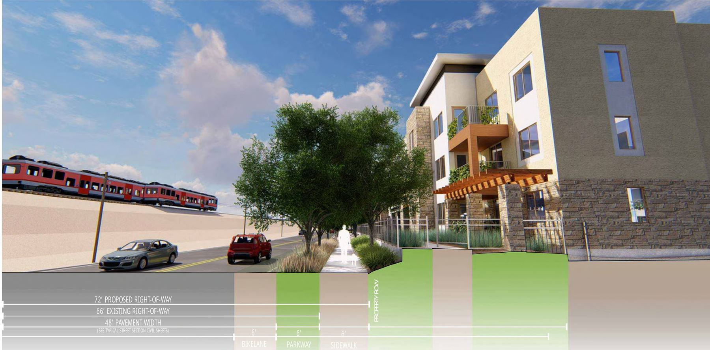
Illustrative Hollister Street plan
The plan on the same L-5 sheet, Attachment 8, PDF p. 90, showing the frontage, including the mid-block crossing, bus stop, and monument-sign locations.
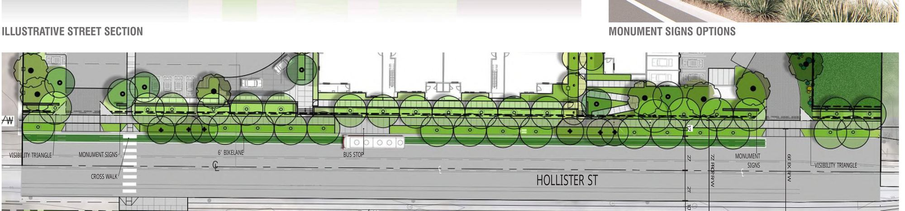
Sheet 4, Cross Section A (full width)
Attachment 8, Tentative Parcel Map conceptual cross sections, Sheet 4 of 5, PDF p. 84. West is Interstate 5 and the biofiltration basin; east is Hollister Street. The labeled zooms below are the clickable drawings.
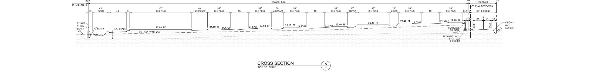
Section A, west end: basin, pads, and the 100-year flood line
Zoom of the west end of Cross Section A, Attachment 8, Sheet 4, PDF p. 84.
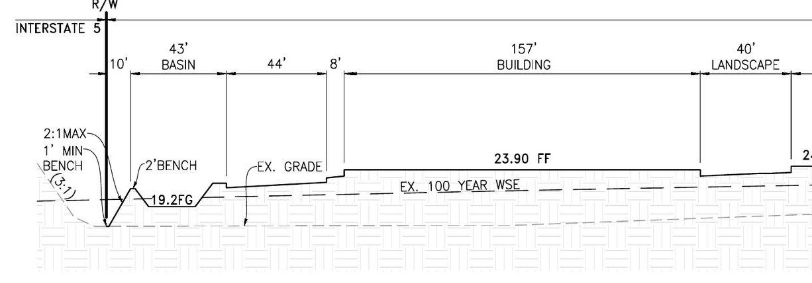
Section A, east end: Hollister wall, guardrail, and the 6-foot dedication
Zoom of the east end of Cross Section A, Attachment 8, Sheet 4, PDF p. 84.
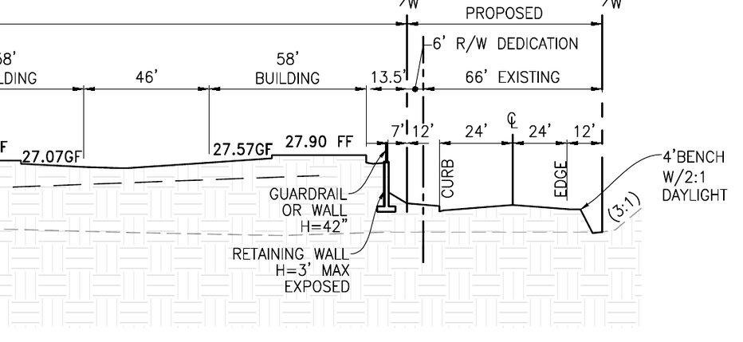
Sheet 4, Cross Section B (full width)
Attachment 8, Sheet 4, PDF p. 84. A second cut through the pads, again ending at Hollister Street with the 3-foot wall, 42-inch guardrail, and 6-foot dedication. The east zoom below is clickable.
Section B, east end: the same Hollister wall and dedication
Zoom of the east end of Cross Section B, Attachment 8, Sheet 4, PDF p. 84.
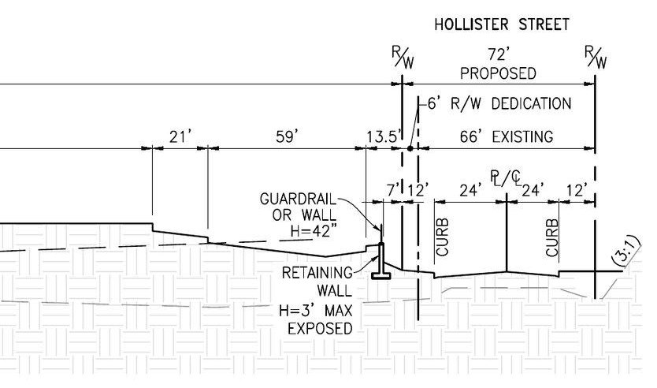
Biofiltration basin detail C/4
Attachment 8, Sheet 4, PDF p. 84. A not-to-scale detail of basin BF-1: 18-inch soil media, a gravel layer, an impermeable liner, an overflow structure, and a subdrain.
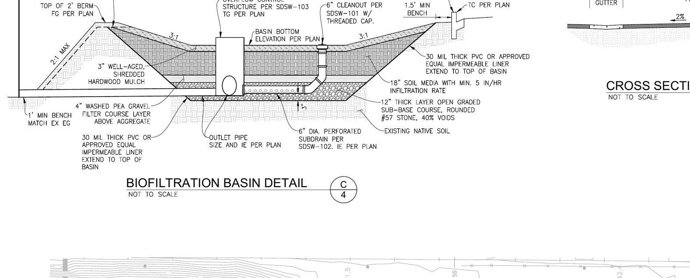
North retaining wall and public path, Detail E/4
Attachment 8, Sheet 4, Cross Section E, PDF p. 84. This is the north edge of the developed pad, at the Multi-Habitat Planning Area. The path is the privately owned, publicly accessible trail required by the permit — not a “Bearwell Loop,” a name that does not appear in the record. The detail does not show sitting benches.
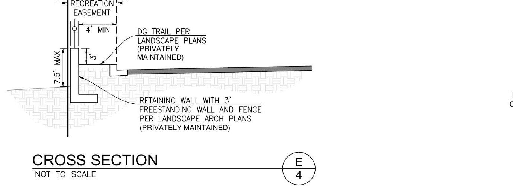
MHPA Wall View 1 and View 2
Attachment 8, landscape sheet L-2, PDF p. 87. These are views from the parking aisle, looking at the wall, the wrought-iron fence, and the decomposed-granite path. No sitting benches are shown.
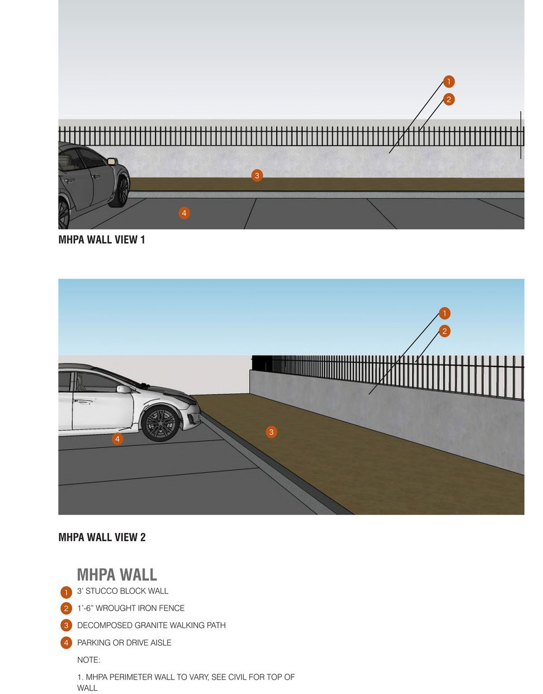
Temporary sidewalk on Hollister Street, Detail F/4
Attachment 8, Sheet 4, PDF p. 84, from station 7+3.35 to 14+8.19, on the east side toward the Palm Golf Center.
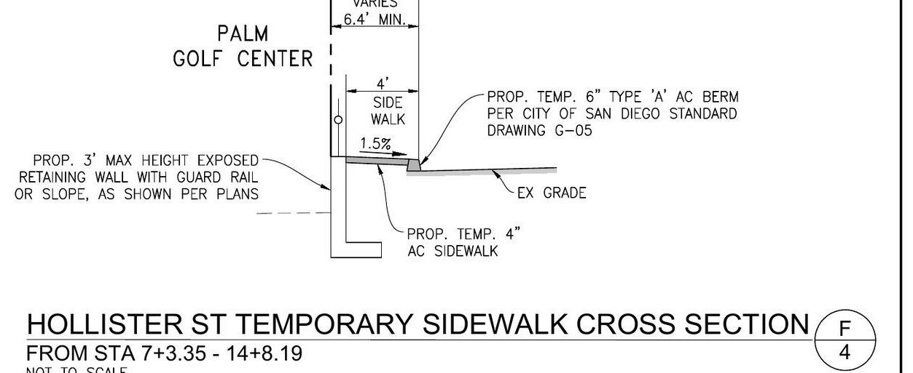
Other drawings from the record
These sheets are part of Attachment 8 but are not pinned above, or they support a line that is not priced. Each caption says which catalog line, if any, the drawing goes with.
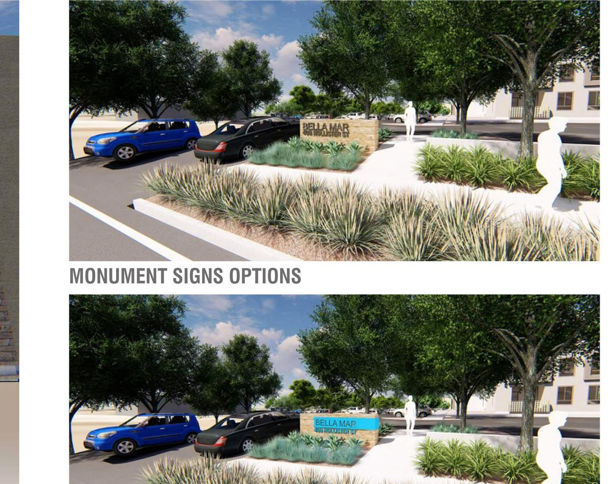
Monument-sign options, Attachment 8, sheet L-5, PDF p. 90. Not priced in this model.
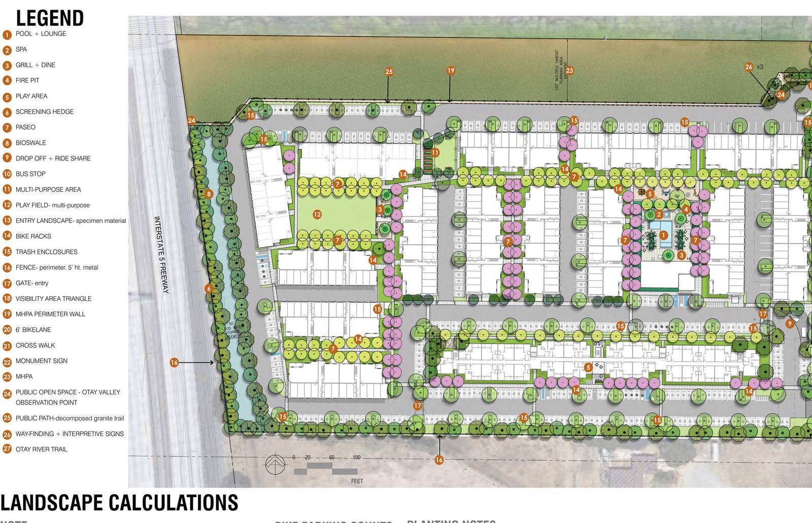
Landscape plan, Attachment 8, sheet L-1, PDF p. 86. Legend items include the pool and play areas (1–5), the bus stop (10), the MHPA perimeter wall (19), the 6-foot bike lane and crosswalk (20–21), monument signs (22), the Otay Valley observation point (23), and the decomposed-granite public path (25). On-site amenities and the north path are catalog line A18, which is not priced in the record. No sitting benches and no “Bearwell Loop” are labeled on this sheet.
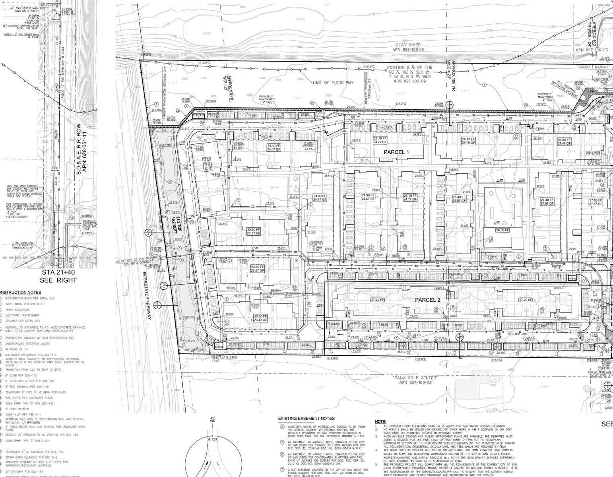
Conceptual grading and utilities, Attachment 8, Tentative Parcel Map Sheet 3 of 5, PDF p. 83. Building pads with finished-floor elevations, the limit of the floodway, the west basin, and construction notes for the north retaining wall (Detail E/4), Hollister curb, sidewalk, temporary asphalt sidewalk, and mid-block crosswalk. Fill to raise the pads is catalog line A2. The wall notes point to A15.
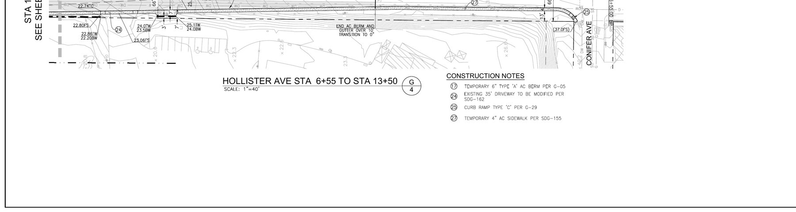
Hollister Street plan on Sheet 4, stations 6+55 to 13+50, Attachment 8, PDF p. 84, looking toward Conifer Avenue. This is the civil plan that goes with the temporary-sidewalk section F/4 and the widening section. Related catalog lines include A17b, A17f, and A17g.
Cost Lines, One by One
Every cost line and income adjustment on this page is listed below, grouped by category. The low and high, and the amount in the headline total, are the figures already used on this page and in the supporting memos. Open Sources & Methods for the citation and the calculation. Support lines are marked so they are not added twice. Where the record has no price, the line says so.
Identification
Explanation
Estimated Cost
Sources & Methods
Liquefaction / Ground
A6 — Liquefaction ground improvement
The site is in the City's high liquefaction category (Category 31 of 2). A strong earthquake could make the buildings settle unevenly and be damaged unless stone columns or a heavy slab are used.
$0 – $3,275,919
Headline $0
Stone-column path, derived, 2017 dollars not escalated.
Heavy slab not priced as a total; extra concrete (derived) is in Sources & Methods.
Sources & Methods
Per Geocon's geotechnical investigation, Project G2129-52-03, April 24, 2019, §6.1 and §6.4, the City of San Diego Seismic Safety Study, Map Sheet 6, defines the site with Hazard Category 31: High Liquefaction Potential — shallow groundwater, major drainages, hydraulic fills. Per Geocon §§7.8–7.9, estimated settlement is up to 1 inch from liquefaction plus up to 1¾ inches of static settlement in soils left in place; buildings may be supported on a mat or post-tensioned foundation if those settlements are within tolerance, or the ground may be improved with stone columns about 30 feet deep, 8 to 10 feet apart, 30 inches in diameter. Per Geocon §7.9.7, that ground improvement should extend at least 15 feet past the edge of the buildings. The 150,964 square foot footprint is the page's approximation from Sheet T.2. The dollar range uses Oakridge Geotechnical's July 10, 2017 conceptual ground-improvement plan for the City of Moorpark as a unit-price reference, not a Bella Mar bid.
Footprint used on the page: about 150,964 square feet. Approximation.
High end of the stone-column range: 150,964 square feet times $21.70 per square foot equals $3,275,919. Derived. Not brought forward from 2017 with the cost index. The 15-foot perimeter is not in this high end.
Cross-check, footprint only: 1,510 to 2,359 columns times 30 feet times $30 per foot, plus $60,000 mobilization, equals about $1.36 million to $2.12 million in 2017 dollars. Derived.
Heavy-slab guide only: $969.10 per cubic yard times 10,769 divided by 10,196 equals $1,023.56 per cubic yard, which is about $3.16 per square foot per inch. Times 150,964 square feet equals about $477,000 per extra inch. Derived. No thickness is in the record, so no total is stated.
Heavy-slab extra concrete alone, derived from the mat-foundation memo §7.6: 1 extra inch $476,917; 6 extra inches $2,861,502 (County structural-concrete proxy on 150,964 sf, October 2026 dollars, concrete only; not a total and not in the headline).
Needs a quantity or price. Derived estimate. The headline total carries this line at $0. The stress-test range is not in the headline total.
A5 — Remedial grading, remove and recompact
Existing loose or unsuitable soil has to be dug up and packed back down so the new fill and buildings have a sound base. This is separate from the imported dirt in A2.
$640,191 – $640,191
Headline $640,191
Sources & Methods
Per the Tentative Parcel Map No. 2361780, Sheet 1, the remedial quantity is 56,860 cubic yards. Per Geocon's geotechnical investigation §7, remedial removals are required. Per the County of San Diego unit price list, the “Embankment/Excavation over 20,001 cubic yards” price is $10.66 per cubic yard. Prices are brought to October 2026 with the California Construction Cost Index.
56,860 cubic yards times $10.66 per cubic yard times 10,769 divided by 10,196 equals $640,191.
Sourced. In the headline total.
A6b — Dewatering for excavations and remedial removals
Brackish groundwater was found 13.5 to 16 feet down. Water must be pumped from excavations so workers can dig, and then disposed of where that is allowed.
$150,000 – $2,500,000
Headline $0
Derived planning range, not a bid. Not in the headline total.
Sources & Methods
Per Geocon's geotechnical investigation §7.1.4, groundwater was encountered at depths of 13.5 and 16 feet in borings B-1 and B-2, and “Dewatering will likely be required for excavations below the fluctuating groundwater elevation.” Per Geocon §7, the water should be considered brackish because of the site's proximity to San Diego Bay. Per the permit resolution, Attachment 7, pp. 62 and 64, excavation is described to 14 feet. There is no dewatering design, pump test, or contractor quote in the record. The dollar range is from the November 16, 2026 dewatering ballpark memo.
No design flow, duration, or bid is in the record.
The low end uses the memo's about $150,000 to $250,000 storm-drain case. The page uses $150,000.
The middle of the page's range, $500,000, is the memo's storm-drain midpoint. Assumption.
The high end, $2,500,000, is the memo's sewer-disposal high. Derived.
Duration, flow, and the disposal path drive the swing, not pump rental. All three are assumptions because they are not in the record.
Needs a quantity or price. Derived estimate. The headline total carries this line at $0.
Flood plain & fill
A2 — Import fill
The site sits in the flood plain (about 94% Zone AE, not the entire parcel). Buildings must be raised at least two feet above the flood level, so dirt has to be trucked in.
$2,453,066 – $2,453,066
Headline $2,453,066
Sources & Methods
Per the Tentative Parcel Map No. 2361780, Sheet 1, the import quantity is 81,350 cubic yards, made up of 78,200 cubic yards on the site and 3,150 cubic yards off the site. Per the County of San Diego unit price list, effective July 2025, imported fill is $28.55 per cubic yard. The Caltrans contract cost data item for imported borrow is cited as a cross-check, not as the price used. Prices are brought to October 2026 with the California Construction Cost Index. Per Geocon's geotechnical investigation, Project G2129-52-03, April 24, 2019, §7, fill is part of the earthwork program.
78,200 cubic yards on the site plus 3,150 cubic yards off the site equals 81,350 cubic yards.
81,350 cubic yards times $28.55 per cubic yard times 10,769 divided by 10,196 equals $2,453,066.
81,350 cubic yards divided by 10 cubic yards per truck equals about 8,135 truckloads. Derived. Trucking is inside the $28.55 price.
Sourced. In the headline total. This is the merged A2 and A3 line. Trucking the dirt to the site is included in the County import price and is not added separately.
Cross Section A, west end, Attachment 8, Sheet 4, PDF p. 84. The pad is raised to a finished floor of 23.90 feet, above existing grade and the existing 100-year flood line.
A23 — Extra fill to make up for soil compaction
Dirt shrinks when it is compacted. The tentative-map import quantity has no shrink factor, so more trucked-in dirt may be needed than the 81,350 cubic yards already counted.
$0 – $353,712
Headline $0
Derived. Not in the headline total.
Sources & Methods
Per the Tentative Parcel Map No. 2361780, Sheet 1 footnote, and Attachment 7, pp. 62 and 64. The range is 0 to 15 percent of the 78,200 cubic yards of on-site import, times the same A2 unit cost of $28.55 per cubic yard, times the July 2025-to-October 2026 cost index. The 15 percent shrink factor is an assumption, because no factor is in the record.
High: 15 percent times 78,200 cubic yards times $28.55 per cubic yard times 10,769 divided by 10,196 equals $353,712. Derived.
The low end is $0 because the shrink factor is not in the record and could be negligible.
Needs a quantity or price. Derived estimate. The headline total carries this line at $0. The shrink factor is not in the record.
A21 — Extra compaction testing so pad fill meets the 95 percent Standard Proctor standard
The flood-fringe fill has to be compacted to 95 percent of the Standard Proctor test (ASTM D-698). Geocon's own earthwork standard is different: 90 percent of a modified Proctor test.
Not priced in the record
Headline $0
Placeholder, stress test, $0 – $200,000
Sources & Methods
Per Attachment 6, conditions 24–26. No test price is in the record or on the County list.
No test price is in the record, so no sourced amount is calculated.
The $200,000 high end is a placeholder assumption, not a bid or a list price.
Needs a quantity or price. Unpriced. The headline total carries this line at $0. The stress-test high is a placeholder, not a sourced price.
A22 — Slope protection for a 5-feet-per-second flood velocity on granular fill slopes
Fill slopes in the floodplain have to be protected against floodwater moving at 5 feet per second. The usual protection is rip rap, which is loose rock placed on the slope.
$0 – $236,208
Headline $0
Derived. Not in the headline total.
Sources & Methods
Per Attachment 6, conditions 24–26. Per the County of San Diego unit price list, rip rap of 0.25 ton is $223.64 per cubic yard. The range assumes 0 to 1,000 cubic yards, which is an assumption. Prices are brought to October 2026 with the California Construction Cost Index.
High: 1,000 cubic yards times $223.64 per cubic yard times 10,769 divided by 10,196 equals $236,208. Derived.
The low end is $0 because no quantity is stated.
Needs a quantity or price. Derived estimate. The headline total carries this line at $0. The quantity of protection is not stated.
A15 — Flood-rated retaining walls
The project has to build flood-rated retaining walls at least two feet above the base flood elevation. The wall at the habitat edge is described as up to 7 feet 6 inches high.
$167,989 – $587,962
Headline $0
Derived. Not in the headline total.
Sources & Methods
Per Attachment 6, conditions 30–31 and item (f); the City's staff report, p. 16; and Attachment 8, landscape sheet L-2. Per the County of San Diego unit price list, a masonry wall is $67.11 per square foot. Prices are brought to October 2026 with the California Construction Cost Index. The wall lengths used for the range are assumptions, not measured takeoffs. The page notes that this County masonry price is likely low for walls designed to stand in floodwater.
Low area: 790 linear feet times 3 feet equals 2,370 square feet, a Hollister-only assumption.
High area: 2,370 plus 790 linear feet times 7.5 feet equals 8,295 square feet, a rectangular-parcel assumption for the north edge plus Hollister.
2,370 square feet times $67.11 per square foot times 10,769 divided by 10,196 equals $167,989. Derived.
8,295 square feet times $67.11 per square foot times 10,769 divided by 10,196 equals $587,962. Derived.
Needs a quantity or price. Derived estimate. The headline total carries this line at $0. Wall lengths are not public, and the descriptions in the record conflict, which the page flags.
MHPA Wall Views 1 and 2, Attachment 8, sheet L-2, PDF p. 87. A 3-foot stucco wall, a 1-foot-6-inch fence, and a decomposed-granite path.Detail E/4, Attachment 8, Sheet 4, PDF p. 84. North retaining wall, 7.5 feet maximum exposed, with a 3-foot freestanding wall and fence.Cross Section A at Hollister Street, Attachment 8, Sheet 4, PDF p. 84. Retaining wall 3 feet maximum exposed, with a 42-inch guardrail or wall.
A7 — FEMA review fees for the flood-map revisions
Because the site is in federal flood zone AE and buildings must sit at least two feet above the flood level, the Federal Emergency Management Agency has to review a Conditional Letter of Map Revision.
$15,000 – $15,000
Headline $15,000
Sources & Methods
Per FEMA's published flood-map-related fee schedule: a Conditional Letter of Map Revision is $6,750 and a Letter of Map Revision that follows a Conditional Letter is $8,250, as paper fees. Per Attachment 6, condition 27, a Letter of Map Revision is required. The City's staff report, p. 14, states that a Conditional Letter of Map Revision has already been received.
$6,750 plus $8,250 equals $15,000.
No cost-index factor is applied. These are posted federal fees.
Sourced. In the headline total.
A8 — Remaining flood-map engineering after the studies already done
The hydraulic study, no-rise certification, and Conditional Letter of Map Revision are already done. What remains is residual as-built flood-map engineering after construction.
$47,242 – $47,242
Headline $47,242
Sources & Methods
Per the City's staff report PC-25-032, p. 14, the Conditional Letter of Map Revision has been received and the no-rise work is done. Per Attachment 6, conditions 27 and 29, a Letter of Map Revision is required before bond release, and Elevation Certificates are required. Per the County of San Diego unit price list, “HEC-2 Study and FEMA revision” is $44,728.04. Prices are brought to October 2026 with the California Construction Cost Index. The underlying study is Fuscoe's Hydraulic Study and No-Rise Certification, December 2019.
1 times $44,728.04 times 10,769 divided by 10,196 equals $47,242.
The earlier Conditional Letter and no-rise engineering costs are treated as already spent and are not added again.
Stormwater from the developed site cannot be allowed to soak into this ground, so it has to be cleaned in a planted basin with an underdrain.
$141,377 – $282,754
Headline $141,377
Sources & Methods
Per Fuscoe's Priority Development Project Storm Water Quality Management Plan, November 25, 2020, pp. 47 and 80–81, basin BF-1 is 11,220 square feet, underdrained, because infiltration is infeasible. Per Fuscoe's Preliminary Drainage Study, p. 10, and Attachment 5, conditions 13–17. Per the County of San Diego unit price list, “Detention Basin, Large (subdivision)” is $11.93 per square foot. Prices are brought to October 2026 with the California Construction Cost Index.
11,220 square feet times $11.93 per square foot times 10,769 divided by 10,196 equals $141,377.
The stress-test high is $141,377 times 2 equals $282,754. Derived. The factor of 2 is an assumption.
Sourced estimate. In the headline total. The stress test also uses a higher derived bound.
Biofiltration basin detail C/4, Attachment 8, Sheet 4, PDF p. 84.
A12c — Packaged stormwater treatment unit for drainage area 7
One drainage area is treated with a manufactured wetland-style unit, a Bioclean Modular Wetland system, instead of the large basin. It is a single packaged treatment device.
$12,598 – $37,793
Headline $12,598
Sources & Methods
Per Fuscoe's Storm Water Quality Management Plan, pp. 47 and 80–81. There is no Modular Wetland quote in the record. Per the County of San Diego unit price list, “Hydro-Dynamic separator, CDS or equal” is $11,927.48, used as a proxy, not as a quote for this product. Prices are brought to October 2026 with the California Construction Cost Index.
1 times $11,927.48 times 10,769 divided by 10,196 equals $12,598. Derived, because the County item is a proxy, not a Modular Wetland price.
The stress-test high is $12,598 times 3 equals $37,793. Derived. The factor of 3 is an assumption.
The property still needs its on-site storm drain pipes, inlets, permeable pavers, and any green-street planting that treats runoff in the parkway. Those quantities are not in the record.
Not priced in the record
Headline $0
Sources & Methods
Per Fuscoe's Preliminary Drainage Study, §3.3, and the Priority Development Project Storm Water Quality Management Plan, pp. 47 and 80–81, and Attachment 5, conditions 13–17. Per the County unit price list, unit prices exist, but pipe lengths and paver areas are not stated.
No on-site pipe length or paver area is stated, so no amount is calculated.
The basin is in A12a, the packaged unit is in A12c, and the public 18-inch line in Hollister is in A17m.
Needs a quantity or price. The headline total carries this line at $0. Not priced in the record. This is the leftover on-site stormwater work after the basin and the packaged treatment unit were moved to A12a and A12c, and after the public 18-inch storm drain in Hollister was moved to A17m.
A20 — Erosion control and the stormwater pollution-prevention plan
A stormwater pollution-prevention plan, including a risk level and a notice of intent with a Waste Discharge Identification number, is required during construction, along with erosion controls such as silt fence.
Not priced in the record
Headline $0
Sources & Methods
Per Attachment 5, conditions 16–17, and Attachment 6, conditions 32–33. Per the County of San Diego unit price list, silt fence is $2.38 per linear foot, among other items. The scope and quantities are not stated.
No scope or quantity is stated, so no amount is calculated.
Needs a quantity or price. The headline total carries this line at $0. Not priced in the record.
Hollister & off-site
A17 — Off-site work that is still not itemized
Some required off-site work still has no quantity or price, including green-street bioretention in the Hollister parkway, a Caltrans encroachment at the Interstate 5 culvert, and signing plans.
Not priced in the record
Headline $0
Sources & Methods
Per Attachment 5, condition 10, and the California Department of Transportation comment letter dated May 31, 2022. Caltrans objected that the project would increase the drainage area to its 24-inch culvert and called that “a diversion of flow which is not allowed,” and asked for a redesign. Whether that was resolved is not shown in the record reviewed. The drainage study is also cited. The County unit price list is attached to the row, but no quantity is stated.
No quantity or price is in the record for these leftover items, so no amount is calculated.
Parkway planting in A17e does not include the green-street bioretention.
Needs a quantity or price. The headline total carries this line at $0. Not priced in the record. The itemized off-site rows are A17a through A17s. This line is only what is left.
A17a — Six-foot right-of-way dedication on Hollister Street
The project must dedicate six feet of right-of-way so Hollister can be widened from 66 feet to 72 feet. There is no construction cost here; the land given up is not priced.
$0 – $0
Not part of the construction total
No construction cost. The value of the land given up is not priced here. Not part of a construction total.
Sources & Methods
Per Attachment 5, condition 31, and Attachment 6, Transportation condition 68. The area is a plan-scale calculation: 790 linear feet times 6 feet equals 4,740 square feet, about 0.11 acre. Derived.
790 linear feet times 6 feet equals 4,740 square feet, about 0.11 acre. Derived.
This is not added as a construction line.
Memo. No construction cost. Land given up, not added.
Cross Section A, Attachment 8, Sheet 4, PDF p. 84, labeling the 6-foot right-of-way dedication from 66 feet existing to 72 feet proposed.
A17b — Hollister Street widening, 16 feet of pavement along the frontage
Hollister Street has to be widened by 16 feet of pavement along the project frontage. That is 790 linear feet of new pavement, a derived area of 12,640 square feet.
$74,094 – $107,604
Headline $74,094
Sources & Methods
Per the Local Mobility Analysis, January 2021, pp. 3–4, the widening is 16 feet. Per Attachment 5, condition 31, and Attachment 6, Transportation condition 68. The frontage length used is 790 linear feet. Per the County of San Diego unit price list, the parking-lot section of 4-inch asphalt, 8-inch Class 2 base, and subgrade is $3.26 plus $1.70 plus $0.59, or $5.55 per square foot, used as the point estimate. The collector-street structural section is not in the record. The stress-test high uses County “Pavement Design, Schedule J” at $7.47 plus $0.59 subgrade. Prices are brought to October 2026 with the California Construction Cost Index.
790 linear feet times 16 feet equals 12,640 square feet.
Low: 12,640 square feet times $5.55 per square foot times 10,769 divided by 10,196 equals $74,094.
High: 12,640 square feet times $8.06 per square foot times 10,769 divided by 10,196 equals $107,604. Derived.
Estimate, derived. In the headline total.
Illustrative Hollister Street section, Attachment 8, sheet L-5, PDF p. 90, labeling 48-foot pavement width.
A17c — Off-site curb and gutter, 8-inch Type G, full frontage
New curb and gutter have to be built along the Hollister frontage. That work is 790 linear feet of 8-inch Type G curb and gutter, at the County unit price.
$32,333 – $32,333
Headline $32,333
Sources & Methods
Per Attachment 5, condition 31, and Attachment 6, Transportation condition 68. The length used is 790 linear feet. Per the County of San Diego unit price list, 8-inch Type G curb and gutter is $38.75 per linear foot. Prices are brought to October 2026 with the California Construction Cost Index.
790 linear feet times $38.75 per linear foot times 10,769 divided by 10,196 equals $32,333.
Sourced estimate. In the headline total.
Cross Section A, Attachment 8, Sheet 4, PDF p. 84, with the curb labeled in the new Hollister section.
A17d — Off-site 6-foot sidewalk, full frontage, set back from the curb
A 6-foot sidewalk, separated from the curb by a parkway, has to be built along the Hollister frontage. Build 4,740 square feet of sidewalk, which is 790 linear feet times 6 feet.
$41,002 – $41,002
Headline $41,002
Sources & Methods
Per Attachment 5, condition 31; Attachment 6, Transportation condition 68; and the Local Mobility Analysis, pp. 3–4. Per the County of San Diego unit price list, sidewalk in the 1-to-5,000 square foot band is $8.19 per square foot. Prices are brought to October 2026 with the California Construction Cost Index.
790 linear feet times 6 feet equals 4,740 square feet.
4,740 square feet times $8.19 per square foot times 10,769 divided by 10,196 equals $41,002.
Sourced estimate. In the headline total.
Illustrative Hollister Street section, Attachment 8, sheet L-5, PDF p. 90, labeling the 6-foot sidewalk.
A17e — Off-site parkway planting and irrigation
The remaining parkway, after the 6-foot sidewalk, has to be planted and irrigated. Green-street bioretention in that parkway is not in this price; it stays in unpriced line A17.
$10,413 – $10,413
Headline $10,413
Derived.
Sources & Methods
Per Attachment 5, condition 31, and Attachment 6, conditions 43–48. The area is 790 linear feet times 6 feet, or 4,740 square feet. Per the County of San Diego unit price list, slope planting of ground cover plus trees and shrubs is $1.18 per square foot and slope irrigation is $0.90 per square foot, used as proxies, for $2.08 per square foot. Prices are brought to October 2026 with the California Construction Cost Index.
790 linear feet times 6 feet equals 4,740 square feet.
$1.18 plus $0.90 equals $2.08 per square foot, used as proxies.
4,740 square feet times $2.08 per square foot times 10,769 divided by 10,196 equals $10,413. Derived.
Estimate, derived. In the headline total.
Illustrative Hollister Street section, Attachment 8, sheet L-5, PDF p. 90, labeling the 6-foot parkway.
A17f — Temporary 4-foot asphalt sidewalk to Conifer Avenue
A temporary 4-foot-wide asphalt sidewalk has to be built from the site to Conifer Avenue. Build 2,780 square feet of temporary asphalt walk.
$6,548 – $11,304
Headline $6,548
Derived.
Sources & Methods
Per Attachment 6, Transportation condition 64 and item g.7, and Attachment 8, Sheet 4. The length used is 695 linear feet, from station 6+55 to 13+50, times 4 feet, or 2,780 square feet. Per the County of San Diego unit price list, 2-inch asphalt is $1.64 per square foot and subgrade is $0.59 per square foot, for $2.23 per square foot at the low end. The high end uses 4-inch asphalt at $3.26 plus $0.59, because thickness is not stated. Prices are brought to October 2026 with the California Construction Cost Index.
695 linear feet times 4 feet equals 2,780 square feet.
Low: 2,780 square feet times $2.23 per square foot times 10,769 divided by 10,196 equals $6,548.
High: 2,780 square feet times $3.85 per square foot times 10,769 divided by 10,196 equals $11,304. Derived.
Sourced estimate. In the headline total. Thickness is not stated, so the stress test has a higher derived bound.
Temporary sidewalk section F/4, Attachment 8, Sheet 4, PDF p. 84.
A17g — Asphalt berm with the temporary sidewalk
An asphalt berm, a low asphalt curb, has to be built with the temporary sidewalk to Conifer Avenue. That work is 695 linear feet of 4-inch asphalt berm.
$8,757 – $8,757
Headline $8,757
Sources & Methods
Per Attachment 6, Transportation condition 64. The length used is 695 linear feet. Per the County of San Diego unit price list, a 4-inch asphalt berm, standard G-5, is $11.93 per linear foot. Prices are brought to October 2026 with the California Construction Cost Index.
695 linear feet times $11.93 per linear foot times 10,769 divided by 10,196 equals $8,757.
Sourced estimate. In the headline total.
Temporary sidewalk section F/4, Attachment 8, Sheet 4, PDF p. 84, labeling the Type A asphalt berm.
A17h — Two Route 932 bus stops, with City-standard slabs
The southbound bus stop has to be relocated and a new northbound stop has to be built, both with City-standard concrete slabs, for Route 932.
Not priced in the record
Headline $0
Placeholder, stress test, $0 – $60,000
Sources & Methods
Per Attachment 6, condition 28 and items g.2–3, and the Local Mobility Analysis, pp. 3–4. No unit price is in the County list or in the record.
No unit price is in the record, so no sourced amount is calculated.
The $60,000 high end is a placeholder assumption, not a bid or a list price.
Needs a quantity or price. Unpriced. The headline total carries this line at $0. The stress-test high is a placeholder, not a sourced price.
Illustrative street plan, Attachment 8, sheet L-5, PDF p. 90, with the bus stop labeled mid-frontage.
A17i — Three curb ramps, two at the site and one at Conifer Avenue
Three pedestrian curb ramps are required: two at the site and one at Conifer Avenue. They must be built to the City's standard for curb ramps.
$6,614 – $6,614
Headline $6,614
Sources & Methods
Per Attachment 5, conditions 7–9, and Attachment 6, conditions 16–17. Per the County of San Diego unit price list, a pedestrian ramp, standards G-27 through G-30, in the 1-to-4 count band, is $2,087.30 each. Prices are brought to October 2026 with the California Construction Cost Index.
3 times $2,087.30 times 10,769 divided by 10,196 equals $6,614.
Sourced estimate. In the headline total.
A17j — Mid-block crossing with rectangular rapid-flashing beacons at the south driveway
A mid-block pedestrian crossing, with rectangular rapid-flashing beacons, has to be installed at the south driveway. Install the mid-block crossing and the flashing-beacon assemblies the City requires at the south driveway.
$14,173 – $28,345
Headline $0
Derived. Not in the headline total.
Sources & Methods
Per Attachment 6, Transportation condition 67, and the Errata in Attachment 19. Rectangular rapid-flashing beacons are not in the County unit price list. The range uses 2 to 4 County “Signal Ahead Flasher” assemblies at $6,709.21 each as a proxy, not as a price for this beacon type. The count of assemblies is an assumption. Prices, when used, are brought to October 2026 with the California Construction Cost Index.
Low: 2 times $6,709.21 times 10,769 divided by 10,196 equals $14,173. Derived.
High: 4 times $6,709.21 times 10,769 divided by 10,196 equals $28,345. Derived.
The 2-to-4 count is an assumption.
Needs a quantity or price. Derived estimate. The headline total carries this line at $0.
Illustrative street plan, Attachment 8, sheet L-5, PDF p. 90, with the mid-block crosswalk labeled near the south driveway.
A17k — Four-foot concrete path to the Otay Valley Regional Park trailhead
A 4-foot multi-use path to the Otay Valley Regional Park trailhead is required. An errata changed it from decomposed granite to concrete. The length is not stated.
$0 – $24,832
Headline $0
Derived. Not in the headline total.
Sources & Methods
Per Attachment 6, Transportation conditions 65–66 and conditions 18–22, and the Errata in Attachment 19. Per the County of San Diego unit price list, 5-inch concrete paving is $7.44 per square foot. The range assumes a length of 0 to 790 linear feet, which is an assumption, because the path may run past the frontage. Prices are brought to October 2026 with the California Construction Cost Index.
High area: 790 linear feet times 4 feet equals 3,160 square feet. Assumption.
3,160 square feet times $7.44 per square foot times 10,769 divided by 10,196 equals $24,832. Derived.
The low end is $0 because the length could be shorter than the frontage, and no length is stated.
Needs a quantity or price. Derived estimate. The headline total carries this line at $0.
A17l — Restriping Hollister Street
Hollister Street has to be restriped along the frontage, between Main and Marian in Chula Vista, and between Conifer and Palm, including parking removal in that last segment.
$0 – $28,391
Headline $0
Derived. Not in the headline total.
Sources & Methods
Per Attachment 6, Transportation conditions 69–70, and the Local Mobility Analysis, Table E-3. Per the County of San Diego unit price list, striping is $1.49 per linear foot and striping removal is $2.99 per linear foot. The range assumes 0 to 6,000 linear feet of lines, which is an assumption. Prices are brought to October 2026 with the California Construction Cost Index.
$1.49 plus $2.99 equals $4.48 per linear foot.
High: 6,000 linear feet times $4.48 per linear foot times 10,769 divided by 10,196 equals $28,391. Derived.
The low end is $0 because no length is stated.
Needs a quantity or price. Derived estimate. The headline total carries this line at $0.
Illustrative Hollister Street section, Attachment 8, sheet L-5, PDF p. 90, labeling the 6-foot bike lane.
A17m — Public 18-inch storm drain in Hollister Street
A public 18-inch reinforced-concrete storm drain has to be built in Hollister Street. The study gives the size and slope, not the length.
$88,638 – $177,276
Headline $118,184
Derived range. The headline uses the point estimate.
Sources & Methods
Per Fuscoe's Preliminary Drainage Study, pp. 10–11, and Attachment 5, conditions 13–17. The point estimate assumes a length equal to the 790-foot frontage. Per the County of San Diego unit price list, 18-inch reinforced-concrete pipe is $141.64 per linear foot. The stress-test range is 0.75 times to 1.5 times that length, or 593 to 1,185 linear feet, which is an assumption. Prices are brought to October 2026 with the California Construction Cost Index.
Point: 790 linear feet times $141.64 per linear foot times 10,769 divided by 10,196 equals $118,184. Derived, because length is assumed.
Low: 0.75 times $118,184 equals $88,638. Derived.
High: 1.5 times $118,184 equals $177,276. Derived.
Estimate, derived. In the headline total. The pipe size is in the drainage study; the length is assumed.
A17n — Public 10-inch sewer main in Hollister Street
A public 10-inch sewer main has to be built in Hollister Street. The County cover-depth adder is not applied here, because the depth is not stated.
$74,551 – $149,103
Headline $99,402
Derived range. The headline uses the point estimate.
Sources & Methods
Per Attachment 6, Public Utilities conditions 59–67. The point estimate assumes a length of 790 linear feet. Per the County of San Diego unit price list, a 10-inch sewer main is $119.13 per linear foot. The stress-test range is 0.75 times to 1.5 times that amount, an assumption. Prices are brought to October 2026 with the California Construction Cost Index.
Point: 790 linear feet times $119.13 per linear foot times 10,769 divided by 10,196 equals $99,402. Derived, because length is assumed.
Low: 0.75 times $99,402 equals $74,551. Derived.
High: 1.5 times $99,402 equals $149,103. Derived.
The County cover adder is not applied, because depth is not stated.
Estimate, derived. In the headline total. Length and cover depth are assumed.
A17o — Sewer manhole
A sewer manhole is required with the public sewer main in Hollister Street. This line is for one County-standard sewer manhole at the County unit price.
$5,354 – $5,354
Headline $5,354
Sources & Methods
Per Attachment 6, Public Utilities conditions 59–67. The page uses a count of 1. Per the County of San Diego unit price list, manhole SM-01 is $5,069.16. Prices are brought to October 2026 with the California Construction Cost Index.
1 times $5,069.16 times 10,769 divided by 10,196 equals $5,354.
Sourced estimate. In the headline total.
A17p — New Hollister Street streetlights
New streetlights have to be installed on Hollister Street. The count is not in the record. Install the City-required streetlights along the frontage, at a count that a lighting plan will set.
$18,897 – $56,690
Headline $0
Derived. Not in the headline total.
Sources & Methods
Per Attachment 5, conditions 7–9, and Attachment 6, conditions 16–17. Per the County of San Diego unit price list, a street light is $8,945.62. The range assumes 2 to 6 lights on about 790 linear feet, which is an assumption. Prices are brought to October 2026 with the California Construction Cost Index.
Low: 2 times $8,945.62 times 10,769 divided by 10,196 equals $18,897. Derived.
High: 6 times $8,945.62 times 10,769 divided by 10,196 equals $56,690. Derived.
Needs a quantity or price. Derived estimate. The headline total carries this line at $0. The number of lights is not stated.
A17q — Putting existing and proposed overhead utilities underground
Existing and proposed overhead utilities along Hollister have to be put underground. Underground the existing and proposed overhead lines along the frontage, to the utility company's and the City's standards.
Not priced in the record
Headline $0
Placeholder, stress test, $0 – $1,500,000
Sources & Methods
Per Attachment 5, conditions 7–9, and Attachment 6, conditions 16–17. No price is in the County list or in the record. A utility-company estimate, for example from San Diego Gas & Electric, is needed.
No price is in the record, so no sourced amount is calculated.
The $1,500,000 high end is a placeholder assumption, not a bid.
Needs a quantity or price. Unpriced. The headline total carries this line at $0. The stress-test high is a placeholder, not a sourced price.
A17r — Two City-standard 25-foot driveways
Two City-standard driveways, each 25 feet wide, have to be built on Hollister. The 12-foot driveway depth used in the price is a plan-scale assumption.
$6,616 – $6,616
Headline $6,616
Derived.
Sources & Methods
Per Attachment 6, condition 16. The area used is 2 times 25 feet times a 12-foot parkway depth, or 600 square feet, a plan-scale figure. Per the County of San Diego unit price list, a driveway, standard G-14, is $10.44 per square foot. Prices are brought to October 2026 with the California Construction Cost Index.
2 times 25 feet times 12 feet equals 600 square feet. Plan-scale.
600 square feet times $10.44 per square foot times 10,769 divided by 10,196 equals $6,616. Derived.
Estimate, derived. In the headline total. The paved area is a plan-scale calculation.
A17s — Traffic control for the off-site work
Work in a live street needs traffic control — cones, signage, flagging, and related measures — while the off-site improvements are built. Provide traffic control for the duration of the off-site street and utility work.
$23,425 – $23,425
Headline $23,425
Sources & Methods
Per Attachment 6, Transportation conditions 68–70, the work is in a live street. Per the County of San Diego unit price list, “Traffic Control, estimated improvement $0–$1 million” is 6.6 percent. The base used is $354,921, the sum of the off-site estimate rows, already brought to October 2026 dollars.
6.6 percent times $354,921 equals $23,425.
The $354,921 base is the sum of the off-site estimate rows as they stood when this line was set. The page notes that this line is static and does not recalculate if those rows change.
Sourced estimate. In the headline total. This amount is static: it does not update if the off-site rows above are edited.
Habitat
A16 — Habitat restoration, 2.3-acre on-site buffer, installation plus a 5-year program
About 2.3 acres along the north edge of the site, from Interstate 5 to Hollister, must be restored as native habitat and then maintained for five years.
$450,717 – $450,717
Headline $450,717
Sources & Methods
Per the City's staff report PC-25-032, p. 7, and RECON's Native Plant Restoration Plan for Multi-Habitat Planning Area land on the Bella Mar Project, March 26, 2021, including Figure 4, the on-site restoration is 2.3 acres. The dollar-per-acre rate is from Merkel & Associates' Chula Vista Bayfront Sweetwater Park Habitat Mitigation Plan, revised January 12, 2023, Table 8: $1,083,530 for 6.44 acres, which is $168,250 per acre, covering installation and a 5-year program. Prices are brought to October 2026 with the California Construction Cost Index, using the January 2023 index of 9,246. The County and habitat-plan support range of $287,985 to $464,778, in lines A16a through A16d, brackets the modeled amount and is not added again.
$1,083,530 divided by 6.44 acres equals $168,250 per acre.
2.3 acres times $168,250 per acre times 10,769 divided by 9,246 equals $450,717.
The modeled amount is unchanged at $450,717.
Sourced. In the headline total. Support lines A16a through A16d break this amount down; they are not added again. A later line, H1, covers perpetual care after year 5 and is not in this amount.
A16a — Support only: site preparation for the habitat area, already in A16
Before planting, non-native plants have to be removed from the 2.3-acre buffer, including cutting, hauling, and herbicide as needed. This support line is already included in A16.
$55,780 – $69,840
Included in A16; not added
Sources & Methods
Per RECON's Native Plant Restoration Plan, §§4.1–4.1.2 / PDF p. 12. The low dollar figure uses Sweetwater Park habitat plan Table 8 site preparation of $134,095 spread over 6.44 acres and then over 2.3 acres, times the January 2023-to-October 2026 cost index. The high figure uses the County clearing-and-grubbing price of $0.66 per square foot on 2.3 acres, times the July 2025-to-October 2026 cost index. The habitat-plan figure includes five grow-kill cycles that this plan does not call for.
Low: $134,095 divided by 6.44 acres times 2.3 acres times 10,769 divided by 9,246 equals $55,780. Derived.
High: $0.66 per square foot times 2.3 acres times 43,560 square feet per acre times 10,769 divided by 10,196 equals $69,840. Derived.
Memo. Support for A16. Not added.
A16b — Support only: container plants and seed, already in A16
The restoration plan calls for about 500 one-gallon plants per acre, about 1,150 plants in all, plus a hand-applied seed mix. This support line is already included in A16.
$61,676 – $217,613
Included in A16; not added
Sources & Methods
Per RECON's Native Plant Restoration Plan, PDF pp. 13–14. The high figure uses Sweetwater Park habitat plan Table 8 site planting of $523,143 spread over 6.44 acres and then over 2.3 acres, times the January 2023-to-October 2026 cost index. The low figure is a County-list cross-check: 1,150 one-gallon shrubs at $8.96 each, plus hydro-seed at $0.48 per square foot on 2.3 acres, times the July 2025-to-October 2026 cost index. Hydro-seed is a list-price proxy; the plan specifies hand-applied seed.
High: $523,143 divided by 6.44 acres times 2.3 acres times 10,769 divided by 9,246 equals $217,613. Derived.
Low: 1,150 times $8.96, plus $0.48 per square foot times 2.3 acres times 43,560, all times 10,769 divided by 10,196, equals $61,676. Derived. Hydro-seed is a proxy.
Memo. Support for A16. Not added.
A16c — Support only: temporary irrigation, already in A16
Temporary irrigation has to be installed on the 2.3-acre habitat strip and then removed once the plants are established. This support line is already included in A16.
$95,237 – $102,033
Included in A16; not added
Sources & Methods
Per RECON's Native Plant Restoration Plan, PDF p. 15. The high figure uses Sweetwater Park habitat plan Table 8 site irrigation of $245,288 spread over 6.44 acres and then over 2.3 acres, times the January 2023-to-October 2026 cost index. The low figure uses the County slope-irrigation price of $0.90 per square foot on 2.3 acres, times the July 2025-to-October 2026 cost index.
High: $245,288 divided by 6.44 acres times 2.3 acres times 10,769 divided by 9,246 equals $102,033. Derived.
Low: $0.90 per square foot times 2.3 acres times 43,560 square feet per acre times 10,769 divided by 10,196 equals $95,237. Derived.
Memo. Support for A16. Not added.
A16d — Support only: 120-day plant establishment plus five years of maintenance and monitoring, already in A16
After planting, there is a 120-day establishment period and then five years of maintenance and monitoring. This support line is already included in A16.
$75,292 – $75,292
Included in A16; not added
Sources & Methods
Per RECON's Native Plant Restoration Plan, PDF pp. 17–20. The dollar figure uses Sweetwater Park habitat plan Table 8: 5-year maintenance of $97,004 plus mitigation monitoring of $84,000, noting that the habitat-plan monitoring line includes installation inspection, a 180-day establishment period, and 5-year monitoring, while this plan's establishment period is 120 days. That sum is spread over 6.44 acres and then over 2.3 acres, times the January 2023-to-October 2026 cost index. No second unit price for a 5-year habitat program is on the County list, so low equals high.
$97,004 plus $84,000 equals $181,004.
$181,004 divided by 6.44 acres times 2.3 acres times 10,769 divided by 9,246 equals $75,292. Derived.
Memo. Support for A16. Not added.
H1 — Habitat restoration, perpetual maintenance after year 5
After the 5-year restoration program in A16, the applicant has to maintain the 2.3-acre on-site restoration forever, under a recorded Covenant of Easement.
$5,939 – $35,247
Headline $20,593
The headline is the mid or point estimate.
Sources & Methods
Per RECON's Native Plant Restoration Plan, PDF p. 21, maintenance is in perpetuity, with a Covenant of Easement and a resource manager and funding mechanism. Per Attachment 5, condition 30; Attachment 6, item i and condition 3; San Diego Municipal Code section 143.0152; and the City's staff report, p. 7, which notes that the 2002 approval required similar restoration that was never performed. The Sweetwater Park habitat plan, §6.3, says long-term management is needed but gives no dollar figure. The yearly rates are derived from: the County of San Diego 2008 Multiple Species Conservation Program annual report, June 17, 2009, “approximately $150 per acre” for management and monitoring in the South County, brought forward with the cost index from December 2008, index 5,322, to October 2026, index 10,769, which is $304 per acre, used as the low; and the San Diego Habitat Conservancy estimate for long-term management of the 3Roots Habitat Preserve, August 30, 2019, $29,012.03 a year divided by 25.42 acres, brought forward from August 2019, index 6,823, to October 2026, which is $1,801 per acre, used as the high. The City Multiple Species Conservation Program planning factor of $47 per acre per year for areas near urban development is in 1996 dollars and is not used as a bound, because the Department of General Services does not publish the construction-cost index before 2001.
Low yearly rate: about $150 per acre times 10,769 divided by 5,322 equals $304 per acre. Derived.
High yearly rate: $29,012.03 divided by 25.42 acres times 10,769 divided by 6,823 equals $1,801 per acre. Derived.
Mid yearly rate: the average of $304 and $1,801, which is $1,052 per acre. Derived.
Mid yearly cost: $1,052 per acre times 2.3 acres equals $2,421 per year. Derived.
Present value at 8 percent, first payment in year 6: $2,421 divided by 0.08, then divided by 1.08 to the fifth power, equals $20,593. Derived.
The low and high present values, $5,939 and $35,247, use the same method on the low and high yearly costs.
Estimate, derived. In the headline total. This is a capitalized operating obligation, not a hard cost, and it does not load the soft-cost, financing, or contingency percentages. It is the only new habitat cost entering the model beyond A16.
On-site improvements
A1 — Clearing and grubbing of the development area
The development area has to be cleared of vegetation and debris before grading. The 2.30-acre north habitat buffer is left out, because that land is not to be developed.
$374,100 – $374,100
Headline $374,100
Sources & Methods
Per the Tentative Parcel Map No. 2361780, Sheet 1, and the City's Planning Commission staff report PC-25-032, the site is 14.62 gross acres and about 2.30 acres stay in the habitat buffer. Per the County of San Diego unit price list, effective July 2025, clearing and grubbing is $0.66 per square foot. Prices are brought to October 2026 with the California Construction Cost Index.
14.62 acres minus 2.30 acres equals 12.32 acres.
12.32 acres times 43,560 square feet per acre equals 536,659 square feet.
536,659 square feet times $0.66 per square foot times 10,769 divided by 10,196 equals $374,100.
Sourced. In the headline total.
A9 — Asphalt paving for surface parking stalls
The surface parking lot has to be paved. The site provides 437 parking spaces in total, and only the 258 surface spaces are in this line.
$499,082 – $499,082
Headline $499,082
Sources & Methods
Per Sheet T.2, Project Data, in Attachment 8, and the City's staff report, 437 spaces are provided: 74 garage, 105 garage and tandem, and 258 surface. The 330 square feet per stall is a Cumming Group Q1 2025 market-analysis allowance, used as an area proxy, not a measured takeoff. Per the County of San Diego unit price list: 4-inch asphalt is $3.26 per square foot, 8-inch Class 2 base is $1.70 per square foot, and subgrade preparation is $0.59 per square foot, for $5.55 per square foot in all. Prices are brought to October 2026 with the California Construction Cost Index.
437 spaces provided minus 74 garage minus 105 garage and tandem equals 258 surface stalls.
258 stalls times 330 square feet per stall equals 85,140 square feet. The 330 square feet is an area proxy.
$3.26 plus $1.70 plus $0.59 equals $5.55 per square foot.
85,140 square feet times $5.55 per square foot times 10,769 divided by 10,196 equals $499,082.
Sourced. In the headline total.
A10 — Paving of internal drives and fire lanes
The interior streets and fire lanes on the property have to be paved, in addition to the surface parking in A9. Pave the on-site drives and fire lanes.
Not priced in the record
Headline $0
Sources & Methods
Per Attachment 6, item (d), internal drives are required. Per the County of San Diego unit price list, the same asphalt and base prices used in A9 would apply once an area is known. No area is stated in the record.
No area is stated, so no amount is calculated.
The County asphalt, base, and subgrade prices in A9 would be the starting rates once an area is taken off the plans.
Needs a quantity or price. The headline total carries this line at $0. Not priced in the record.
A11 — On-site concrete curb, gutter, and walks
The property itself needs concrete curbs, gutters, and sidewalks, separate from the work in the public street, which is already itemized in A17c and A17d.
Not priced in the record
Headline $0
Sources & Methods
Per Attachment 6, conditions 16–17. Per the County of San Diego unit price list, curb and gutter is $38.75 per linear foot, and sidewalk is $6.55 to $8.19 per square foot. No on-site lengths or areas are stated in the record.
No on-site length or area is stated, so no amount is calculated.
Off-site curb and sidewalk are not in this line; they are in A17c and A17d.
Needs a quantity or price. The headline total carries this line at $0. Not priced in the record.
A13 — On-site water and sewer mains and laterals
The property needs its own water and sewer pipes from the public mains to the buildings. Drinking water is served by California American Water, not by the City.
Not priced in the record
Headline $0
Sources & Methods
Per Attachment 6, Public Utilities conditions 58–67, water is by California American Water. Per the County of San Diego unit price list, a 6-inch sewer is $104.36 per linear foot and a hydrant is $5,740. No on-site pipe lengths are stated.
No on-site length is stated, so no amount is calculated.
The public sewer in Hollister is not in this line; it is in A17n.
Needs a quantity or price. The headline total carries this line at $0. Not priced in the record.
A14 — On-site electric, gas, and telecom
Electric, gas, and telephone or data lines have to be brought across the property to the buildings. Putting existing overhead lines along Hollister underground is a separate line, A17q.
Not priced in the record
Headline $0
Sources & Methods
Per Attachment 5, conditions 7–9. No utility estimate is in the record. This row has no unit-price source attached on the page.
No quantity or price is in the record, so no amount is calculated.
Off-site undergrounding is not in this line; it is in A17q.
Needs a quantity or price. The headline total carries this line at $0. Not priced in the record. The source on this row is thin: the conditions require the work, but there is no unit price and no quantity.
A18 — Landscape, hardscape, pool, spa, and play areas
The project includes clubhouse amenities, a pool and spa, play areas, a field, and a publicly accessible trail and overlook. Those site amenities are not priced in this model row.
Not priced in the record
Headline $0
Sources & Methods
Per the City's staff report, pp. 2 and 8, and Attachment 6, items c–d and g.8–9, and conditions 12–13 and 43–48. No landscape-plan area takeoff is attached to this row, and the row has no unit-price source on the page.
No area or count is entered on this row, so no amount is calculated.
Needs a quantity or price. The headline total carries this line at $0. Not priced in the record. The source is thin on quantities: the amenities are required, but areas and counts are not taken off.
Landscape plan, Attachment 8, sheet L-1, PDF p. 86, including the pool and play areas, the north public path (legend 25), and the observation point (legend 23). Not priced in the record.The decomposed-granite walking path in MHPA Wall View 2, Attachment 8, sheet L-2, PDF p. 87. Not priced in the record.
A19 — Demolition of remnant go-kart asphalt and a concrete pad
The City's staff report describes remnant go-kart paving on the site. The waste-management plan says there is no demolition. Until that conflict is resolved and an area is measured, there is no amount.
Not priced in the record
Headline $0
Sources & Methods
Per the Waste Management Plan §5.1, no demolition; versus the City's staff report, p. 5, remnant go-kart paving. Per the County of San Diego unit price list, asphalt removal is $4.47 per square foot. No area is stated.
No area is stated, so no amount is calculated.
The County removal price would apply once an area is known, if demolition is in fact required.
Needs a quantity or price. The headline total carries this line at $0. Not priced in the record. The record conflicts on whether demolition is needed.
Buildings
B1 — Fourteen three-story walk-up buildings and the clubhouse, Parcel 1
Parcel 1 is 14 three-story, wood-frame walk-up apartment buildings plus a 4,350 square foot clubhouse, including 53,516 square feet of garages.
$103,053,514 – $103,053,514
Headline $103,053,514
Sources & Methods
Per Sheet T.2, Project Data, in Attachment 8, the building gross floor area for this parcel is 377,552 square feet. The dollar-per-square-foot rate is $260, from the California Tax Credit Allocation Committee and California Debt Limit Allocation Committee project staff report CA-25-798, Otay Ranch II, Chula Vista, December 10, 2025. That filing is a four-story building and “includes on-site work”; its gross-versus-net basis is not labeled. Prices are brought to October 2026 with the California Construction Cost Index, using the December 2025 index of 10,258, which is $272.95 per square foot. A cross-check is Rider Levett Bucknall's Los Angeles multifamily low of $275, adjusted by the BAE Urban Economics San Diego-to-Los Angeles factors of 1.13 and 1.14, which equals $272.59.
377,552 square feet times $260 per square foot times 10,769 divided by 10,258 equals $103,053,514.
Cross-check only: $275 times 1.13 divided by 1.14 equals $272.59 per square foot, close to the $272.95 used here.
Sourced. In the headline total.
B2 — Building 15, the four-story affordable building with elevators, Parcel 2
Parcel 2 is Building 15, a four-story affordable apartment building with elevators, 100,453 square feet of gross floor area. A heavy-slab foundation premium is not included in this line.
$27,418,831 – $27,418,831
Headline $27,418,831
Sources & Methods
Per Sheet T.2, Project Data, the gross floor area is 100,453 square feet. The same $260 per square foot from the Otay Ranch II tax-credit staff report, CA-25-798, December 10, 2025, is used, because that comparable is itself a four-story building. Prices are brought to October 2026 with the California Construction Cost Index, 10,769 divided by 10,258.
100,453 square feet times $260 per square foot times 10,769 divided by 10,258 equals $27,418,831.
Sourced. In the headline total.
Code & conditions
B3 — Interior noise reduction of up to 31 decibels, plus mechanical ventilation, for buildings near Interstate 5
Buildings closest to Interstate 5 have to reduce interior noise by up to 31 decibels, using higher-rated windows, doors, and walls, and they need mechanical ventilation so windows can stay closed.
Not priced in the record
Headline $0
Placeholder, stress test, $0 – $1,000,000
Sources & Methods
Per Attachment 6, condition 39, and RECON's Noise Analysis Report, December 21, 2020. No price is in the record. Part of this work may already sit inside the $260 per square foot comparable, but that is not demonstrated.
No price is in the record, so no sourced amount is calculated.
The $1,000,000 high end is a placeholder assumption, not a bid.
Needs a quantity or price. Unpriced. The headline total carries this line at $0. The stress-test high is a placeholder.
B4 — MERV-13 air filtration in each of the 380 apartments
Each of the 380 apartments has to have MERV-13 filtration, a mid-to-high grade of air-filter efficiency, in its heating and cooling system.
Not priced in the record
Headline $0
Placeholder, stress test, $0 – $190,000
Sources & Methods
Per Attachment 6, condition 37. No price is in the record.
No price is in the record, so no sourced amount is calculated.
$500 times 380 units equals $190,000. That $500 is a placeholder assumption, not a sourced unit price.
Needs a quantity or price. Unpriced. The headline total carries this line at $0. The stress-test high is a placeholder.
B5 — Solid 3.5-foot balcony railings on the second and third floors nearest Interstate 5
Balconies on the second and third floors closest to Interstate 5 have to have solid railings 3.5 feet high, so they block more noise than an open rail would.
Not priced in the record
Headline $0
Placeholder, stress test, $0 – $250,000
Sources & Methods
Per Attachment 6, condition 38, and RECON's Noise Analysis Report, Figure 8. No price is in the record.
No price is in the record, so no sourced amount is calculated.
The $250,000 high end is a placeholder assumption, not a bid.
Needs a quantity or price. Unpriced. The headline total carries this line at $0. The stress-test high is a placeholder.
B6 — Dual-glazed, dual-tempered openings on the north faces of Buildings 1 through 5, plus 10-foot returns
Windows and other openings on the north faces of Buildings 1 through 5, and for 10 feet around the corners, have to use dual-glazed, dual-tempered glass.
Not priced in the record
Headline $0
Placeholder, stress test, $0 – $300,000
Sources & Methods
Per Attachment 6, conditions 49–53, and the City's staff report, p. 14. No price is in the record.
No price is in the record, so no sourced amount is calculated.
The $300,000 high end is a placeholder assumption, not a bid.
Needs a quantity or price. Unpriced. The headline total carries this line at $0. The stress-test high is a placeholder.
C12 — Full-time archaeological and Native American monitors during all soil disturbance, plus curation
Full-time archaeological and Native American monitors are required whenever soil is disturbed, and finds may have to be curated. Duration and billing rates are not in the record.
Not priced in the record
Headline $0
Placeholder, stress test, $0 – $300,000
Sources & Methods
Per Attachment 18, mitigation measure HR-1, pp. 11–19 of that attachment, and the City's staff report, p. 19.
Duration and rates are not in the record, so no sourced amount is calculated.
The $300,000 high end is a placeholder assumption, not a bid.
Needs a quantity or price. Unpriced. The headline total carries this line at $0. The stress-test high is a placeholder.
C13 — Biological surveys and monitoring
Protocol surveys and monitoring are required for least Bell's vireo and Ridgway's rail, plus burrowing-owl and nesting-bird surveys, and a biologist for the habitat-preserve edge.
Not priced in the record
Headline $0
Placeholder, stress test, $0 – $50,000
Sources & Methods
Per Attachment 18, mitigation measures Bio-1A, Bio-1B, Bio-2, and Bio-3; Attachment 5, condition 28; Attachment 6, condition 54; RECON's Burrowing Owl Assessment, January 13, 2020, p. 3; and the California Department of Fish and Wildlife comment letter, May 26, 2022, p. 3. No rate or duration is priced.
No rate or duration is in the record, so no sourced amount is calculated.
The $50,000 high end is a placeholder assumption, not a bid.
Needs a quantity or price. Unpriced. The headline total carries this line at $0. The stress-test high is a placeholder.
Fees
C2 — Building permit, plan check, and inspection fees
The City of San Diego Development Services Department charges fees to review plans, issue building permits, and inspect the work. Those fees have not been estimated on this page.
Not priced in the record
Headline $0
Sources & Methods
Per Attachment 6, informational notes, and the City of San Diego Development Services fee schedules. A Development Services fee estimate is needed.
No City fee estimate is in the record, so no amount is calculated.
Needs a quantity or price. The headline total carries this line at $0. Not priced in the record.
C3 — Citywide development impact fees for parks, fire, library, and mobility
The City charges one-time development impact fees on new apartments, covering parks, fire, library, and mobility. Affordable-unit exemptions, if any, have not been verified, so the calculation uses all 380 units.
$8,440,114 – $8,440,114
Headline $8,440,114
Sources & Methods
Per the City of San Diego, Fiscal Year 2027 City Planning Department Fee and Deposit Schedule, multi-family table by unit size, totaling $8,440,114, which is $22,210.83 per unit on average. The City's staff report is also cited. The page points to a development-impact-fee detail for the unit-size breakdown; this memo uses the page's already-entered total and does not invent a new breakdown.
380 units times $22,210.8263 per unit, the page's average, equals $8,440,114.
Sourced. In the headline total.
C4 — Regional transportation congestion-improvement program fee
A regional transportation fee, often called the RTCIP fee, is charged on each new dwelling unit. Pay the regional transportation fee on 380 dwelling units.
$1,181,754 – $1,181,754
Headline $1,181,754
Sources & Methods
Per the City of San Diego, Fiscal Year 2027 City Planning Department Fee and Deposit Schedule, the rate is $3,109.88 per dwelling unit.
380 dwelling units times $3,109.88 per dwelling unit equals $1,181,754.
Sourced. In the headline total.
C5 — School fees, South Bay Union and Sweetwater Union High, Level 1
The two local school districts charge a combined Level 1 school fee on residential floor area. Garages are left out of the area. Pay school fees on 364,635 square feet of assessable residential area.
$1,961,736 – $1,961,736
Headline $1,961,736
Sources & Methods
Per Sheet T.2, residential leasable area is 364,635 square feet, with garages excluded. Per the California Department of General Services, Office of Public School Construction, State Allocation Board index adjustment on developer fees, January 28, 2026, the 2026 statutory Level 1 maximum is used, together with the South Bay Union School District and Sweetwater Union High School District developer-fee materials: $2.37 plus $3.01 equals $5.38 per square foot.
$2.37 plus $3.01 equals $5.38 per square foot.
364,635 square feet times $5.38 per square foot equals $1,961,736.
Sourced. In the headline total. Level 2 fees or a community-facilities district have not been verified.
C6 — City water capacity charge
The City of San Diego publishes a water capacity charge of $3,047 per equivalent dwelling unit. Water here is served by California American Water, so that City charge may not apply.
Not priced in the record
Headline $0
Sources & Methods
Per Attachment 6, Public Utilities condition 58, the water purveyor is California American Water. The City rate cited on the page is from the Public Utilities Fiscal Year 2024–2028 Five-Year Financial Outlook, $3,047 per equivalent dwelling unit. No equivalent-dwelling-unit count and no California American Water fee schedule are entered.
No equivalent-dwelling-unit count is entered, and the City charge may not apply, so no amount is calculated.
Needs a quantity or price. The headline total carries this line at $0. This charge may not apply.
C7 — City wastewater capacity charge
The City of San Diego charges a wastewater capacity charge of $5,154 per equivalent dwelling unit for sewer service. The number of equivalent dwelling units needs a City determination.
Not priced in the record
Headline $0
Sources & Methods
Per Attachment 6, Public Utilities conditions 59–67, sewer is City service. The rate cited on the page is from the Public Utilities Fiscal Year 2024–2028 Five-Year Financial Outlook, $5,154 per equivalent dwelling unit. No count is entered.
No equivalent-dwelling-unit count is entered, so no amount is calculated.
Needs a quantity or price. The headline total carries this line at $0. Not priced in the record. Sewer is City service, but the equivalent-dwelling-unit count has not been determined.
C8 — San Diego County Water Authority system and treatment capacity charges
The San Diego County Water Authority charges system and treatment capacity charges that often depend on meter size. Whether those charges apply through California American Water's wholesale arrangement has not been verified, and no meter.
Not priced in the record
Headline $0
Sources & Methods
Per Attachment 6, Public Utilities condition 58, and the San Diego County Water Authority capacity-charge schedule. No meter count or size is entered.
No meter schedule is in the record, and applicability is not verified, so no amount is calculated.
Needs a quantity or price. The headline total carries this line at $0. Not priced in the record.
Soft costs
C1 — Architecture and engineering
Design fees for architecture and engineering, expressed as a percentage of site work plus building cost, using the same ratio as the Otay Ranch II tax-credit filing.
$5,544,743 – $5,544,743
Headline $5,544,743
Sources & Methods
Per the California Tax Credit Allocation Committee staff report CA-25-798, Otay Ranch II, Chula Vista, December 10, 2025: architecture and engineering of $3,010,500 divided by construction cost of $73,589,410 equals 4.0909 percent.
$3,010,500 divided by $73,589,410 equals 4.0909 percent.
4.0909 percent times $135,538,461 equals $5,544,743.
Sourced. In the headline total.
C9 — Legal fees
Legal fees are expressed as a percentage of site work plus building cost, using the same ratio as the Otay Ranch II tax-credit filing. The amount moves if that total changes.
$731,230 – $731,230
Headline $731,230
Sources & Methods
Per the California Tax Credit Allocation Committee staff report CA-25-798, Otay Ranch II: legal of $397,000 divided by construction cost of $73,589,410 equals 0.5395 percent.
$397,000 divided by $73,589,410 equals 0.5395 percent.
0.5395 percent times $135,538,461 equals $731,230.
Sourced. In the headline total.
C10 — Soft-cost contingency
A contingency allowance on soft costs, expressed as a percentage of site work plus building cost, using the same ratio as the Otay Ranch II tax-credit filing.
$2,026,029 – $2,026,029
Headline $2,026,029
Sources & Methods
Per the California Tax Credit Allocation Committee staff report CA-25-798, Otay Ranch II: soft-cost contingency of $1,100,000 divided by construction cost of $73,589,410 equals 1.4948 percent.
$1,100,000 divided by $73,589,410 equals 1.4948 percent.
1.4948 percent times $135,538,461 equals $2,026,029.
Sourced. In the headline total.
C11 — Other soft costs: insurance, title, taxes during construction, and marketing
Remaining soft costs include insurance, title, property taxes during construction, marketing, bond premiums, a mitigation-monitoring deposit, various recorded agreements, and a California Department of Fish and Wildlife filing fee.
Not priced in the record
Headline $0
Sources & Methods
Per Attachment 5, condition 12; Attachment 6, conditions 16–23, 28, and 59–68, on bonds, easements, and agreements; Attachment 18, the mitigation monitoring and reporting program, on the monitoring deposit; and the California Department of Fish and Wildlife filing fee. This row has no unit-price source on the page.
No amounts are in the record, so no amount is calculated.
Needs a quantity or price. The headline total carries this line at $0. Not priced in the record. The source is thin: many required bonds, agreements, and insurance items are named, but none is priced.
Financing & contingency
D1 — Construction interest and financing costs
Interest during construction and related financing costs, expressed as a percentage of site work plus building cost, using the same ratio as the Otay Ranch II tax-credit filing.
$25,673,018 – $25,673,018
Headline $25,673,018
Sources & Methods
Per the California Tax Credit Allocation Committee staff report CA-25-798, Otay Ranch II: “Const. Interest, Perm. Financing” of $13,938,933 divided by construction cost of $73,589,410 equals 18.9415 percent.
$13,938,933 divided by $73,589,410 equals 18.9415 percent.
18.9415 percent times $135,538,461 equals $25,673,018.
Sourced. In the headline total.
E1 — Hard-cost contingency
A contingency allowance on hard costs, expressed as a percentage of site work plus building cost, using the same ratio as the Otay Ranch II tax-credit filing.
$6,221,622 – $6,221,622
Headline $6,221,622
Sources & Methods
Per the California Tax Credit Allocation Committee staff report CA-25-798, Otay Ranch II: hard-cost contingency of $3,377,971 divided by construction cost of $73,589,410 equals 4.5903 percent.
$3,377,971 divided by $73,589,410 equals 4.5903 percent.
4.5903 percent times $135,538,461 equals $6,221,622.
Sourced. In the headline total.
F1 — Developer fee
A developer fee, if one is taken, has not been set for this market-rate project. The page found no public market-rate standard. Decide whether a developer fee is taken, and in what amount.
Not priced in the record
Headline $0
Sources & Methods
Per the California Tax Credit Allocation Committee staff report CA-25-798, Otay Ranch II, the tax-credit developer fee on that comparable was $16,034,030. That figure is a regulated tax-credit fee and is shown only as a reference, not as this project's fee.
No percentage or amount is entered, so no amount is calculated.
Needs a quantity or price. The headline total carries this line at $0. Not priced in the record.
Land
G1 — Land basis
The amount assigned to the land in this valuation case. It is an input, not an appraisal of what the land would sell for. Nothing is built under this line.
$19,000,000 – $19,000,000
Headline $19,000,000
Case input, not a sourced market value.
Sources & Methods
$19.0 million is from Michael's call inputs on November 16, 2026. Alternatives noted on the page are $0, which is Michael's position that the land is worth essentially nothing, and $2,468,072, the 2026 assessed value from the San Diego County Assessor, Recorder, and County Clerk. The $19 million figure itself is not a sourced sale or appraisal.
1 times $19,000,000 equals $19,000,000.
No cost-index factor is applied.
Case input. Not a sourced market value. In the headline total at $19,000,000.
Income adjustments
O1 — Rent shortfall on 11 apartments at the 30 percent of area-median-income cap
Eleven affordable apartments must be rented at the 30% of area-median-income cap. Those caps are lower than the other affordable rents in the model, which cuts yearly rental income.
$127,000 a year – $127,000 a year
Headline $127,000 a year
Sources & Methods
Per the City's Planning Commission staff report PC-25-032, p. 7, the affordable mix is 28 units at 80 percent, 22 at 60 percent, and 11 at 30 percent of area median income, plus 1 manager unit. Per the California Tax Credit Allocation Committee 2026 maximum gross rent limits, for placements in service on or after May 1, 2026, the 30 percent caps are $984, $1,181, and $1,364 a month for a one-, two-, and three-bedroom unit. The comparison rents in the model are $1,838 to $2,518 a month. The $127,000 a year figure is the calculation from the November 16, 2026 conditions-impact analysis, used as the page estimate. A bedroom-by-bedroom multiplier is not separately itemized on the page beyond that total.
11 units at the 30 percent caps of $984, $1,181, and $1,364 a month, compared with model rents of $1,838 to $2,518 a month, equal about $127,000 a year of lost gross potential rent. Estimate, from the November 16 conditions analysis.
Utility allowances are not in the record and are not subtracted here; they would make the shortfall larger.
Sourced estimate. Deducted from yearly income. In the headline value.
O2 — Perpetual maintenance of the stormwater treatment facilities, as an operating expense
The owner has to maintain the biofiltration basin, the packaged treatment unit, the permeable pavers, and the green-street facilities forever, under a stormwater-facility maintenance agreement.
Not priced in the record
Headline $0
Placeholder, stress test, $0 – $25,000 a year
Sources & Methods
Per Fuscoe's Storm Water Quality Management Plan, pp. 30–32, and Attachment 6, conditions 32–33, which require a Best Management Practice Maintenance Agreement. No cost is in the record.
No cost is in the record, so no sourced amount is calculated.
The $25,000-a-year high end is a placeholder assumption, not a bid.
Needs a quantity or price. Unpriced. No yearly amount is entered, so nothing is deducted in the headline. The stress-test high is a placeholder.
O3 — Flag only: the model's one-bedroom affordable rent matches the 60 percent efficiency-unit cap, not the one-bedroom cap
This is a flag only, not a deduction. The model's one-bedroom affordable rent matches the 60% efficiency-unit cap, not the higher one-bedroom cap, and the difference is not applied.
Flag only; not applied
Headline $0
Flag only; not applied. Unused upper bound is $75,093 a year more income, not a cost.
Sources & Methods
Per the California Tax Credit Allocation Committee 2026 maximum gross rent limits, and the November 14 rent memo, which is an internal, not public, source. The 48 one-bedroom affordable units and the 11 units already at the 30 percent cap in O1 are the counts used in the unused upper-bound arithmetic.
This calculation is not applied.
If it were: 48 units times $1,968 minus $1,837.63, times 12 months, equals $75,093 a year as an upper bound, before utility allowances and before the 30 percent-tier mix in O1.
Flag only. Not applied. Not deducted in the headline.
Headline figures on this page are unchanged: net present value −$61,209,294 and residual land value −$42,209,294. Amounts labeled derived are calculated from a source; they are not contractor bids. Lines marked “not priced in the record” or “included in A16; not added” are not added again into the headline total.
How Value Is Defined Here
Before the numbers, it helps to be clear about what “value” means on this page, and when land counts as an asset.
In everyday terms, something is an asset only if it gives its owner a right to an economic benefit today — a real chance of money, or something that can be turned into money — not just a hope that a future plan might work.
“An asset is a present right of an entity to an economic benefit.”
The international accounting rule-writers say the same thing in slightly different words. An asset is “a present economic resource controlled by the entity as a result of past events.” And “an economic resource is a right that has the potential to produce economic benefits.”
International Accounting Standards Board, Conceptual Framework for Financial Reporting (2018), paragraphs 4.3 and 4.4, as stated in the Board’s official March 2018 project summary.
Those are accounting definitions, not appraisal rules. This page is a valuation analysis by Michael Corkery, CFA, not a licensed appraisal. They are used here only to frame a simple point: land is an asset only if it can produce an economic benefit.
This page also keeps three different kinds of figures separate:
Assessed value is the County tax-roll number ($2,468,072 on the 2026 roll). It is used to set property tax. It is not a conclusion about what a buyer would pay.
Market value, in this analysis, is the price a buyer and a construction lender could support. The test, described later, is whether the finished project would be worth more than it costs to build.
Investment value would be a value to one particular investor, using that investor’s own assumptions. This page does not present an investment-value conclusion.
On that test, land is an asset only if some use of it can produce a benefit above the cost of making the land usable. Here, none of the uses tested does that.
None of the exits tested is profitable
Based on the calculations on this page and the related break-even and rezoning work, no exit strategy that was tested appears profitable for this project, or for a similar one. That is not a claim that no project of any kind could ever work. It is a statement about the exits that were actually tested:
Building and holding, or selling, the approved 380-unit apartment plan.
Adding more homes, up to the zoning cap of about 424 units, or a hypothetical state density bonus.
The same tests with the land counted at $0.
The one-at-a-time changes that would be needed to break even — rents up about 16–19%, building cost down to about $205–$215 per square foot, or a buyer yield (cap rate) of about 3.6–3.8% — each of which is unsupported by the market data used on this page.
An earlier recreational-vehicle park idea, only as far as the public record confirms it. The Trolley Stop RV Park was approved in 2002 under a conditional use permit (96-7318), with a time extension in 2006, when the land was zoned agricultural and open space (AR-1-2 and OF-1-1). Title was held for a time by Bella Mar RV Park LLC. The City’s staff report says that permit was not carried out, the required habitat restoration did not happen, and the permit was not kept active; those older approvals are being withdrawn. That earlier idea sat on the same floodplain and faced the same site burdens. This page does not include a separate RV-park financial model.
Executive Summary
The cost to unlock the value of the land exceeds any value that the land could produce, especially with the existing conditions.
The land can't carry the cost of making it usable. It's not that it's worth a little — it's that the cost to unlock it exceeds any value it could return. That's your zero.
The floodplain and location-driven costs that sit behind that statement are at the top of this page.
This is a 14.13-acre parcel at 408 Hollister Street, San Diego (the County assessor’s acreage; the City staff report uses 14.62 acres). On August 14, 2025, the Planning Commission approved a 380-unit apartment project on the site.
Almost the entire site is in a federal floodplain (FEMA Zone AE). That means federal maps show it as land that would flood in a 100-year storm. The plans call for 81,350 cubic yards of imported fill, plus 56,860 cubic yards of digging up and recompacting existing soil.
Making the land usable also requires pumping out groundwater (the water table is 13.5 to 16 feet down), strengthening weak soils so buildings can stand on them, flood-rated retaining walls, stormwater basins and treatment, and habitat restoration and upkeep on a 2.3-acre strip along the north edge.
Building the apartments themselves is a separate, large cost on top of that site work.
In Michael Corkery, CFA’s analysis, the cost of making this land usable is greater than what the land could return. As it stands, the land does not work as collateral for a loan, and a lender using the test on this page would most likely not lend against it.
75%Majority member interest14.62 acAcreage in the staff reportBella Mar Land Investors LLCOwner of record380Approved homes437Parking spaces26 du/acHomes per acre, as proposed
Ownership
This chart shows who owns the company that holds title to the land, and a related company that was formed to build the project.
Jeffrey D. Phair personally owns 75 percent of Bella Mar Land Investors LLC. The Pressley Family Trust owns 25 percent. Bella Mar Land Investors LLC is the owner of record of 408 Hollister Street, San Diego, assessor parcel 627-100-09-00, 14.62 acres, and title remains in that company. Jeffrey D. Phair also holds a 50 percent interest in RTA Phair/Hollister, LLC, a company formed to build the Bella Mar project. The bankruptcy examiner reports that company has never conducted business.
Members
Personally
Jeffrey D. Phair
75%
75%
Pressley Family Trust
25%
25%
Bella Mar Land Investors LLC
100%
Property
Title
Title remains in Bella Mar Land Investors LLC
Owner of record
408 Hollister St, San Diego
APN 627-100-09-00 · 14.62 ac
Related entity
Jeffrey D. Phair interest
RTA Phair/Hollister, LLC
50%
Formed to build out Bella Mar; examiner: never conducted business
What It Costs to Make This Land Usable
Three kinds of ground work come up over and over in the technical studies for this site. Here is what they mean, in ordinary language, and what they mean at this property.
Dewatering
Dewatering is pumping groundwater out of a hole so people can work in the dry. If you dig below the water table, the hole fills with water unless you pump it out and send that water somewhere allowed, such as a storm drain or the sewer.
At this site, groundwater has been measured 13.5 to 16 feet down. The geotechnical report says dewatering will likely be required, and some digging goes to about 14 feet. The water is brackish (slightly salty), which can make disposal more expensive.
The cost range is $150,000 to $2,500,000. That is a planning estimate, not a bid: the low end assumes about three months of discharge to a storm drain; the high end assumes disposal to the sewer. There is no pump test and no contractor quote yet.
Ground Improvement
Ground improvement means treating weak or shaky soils so they can safely hold up buildings. One common method is stone columns — columns of compacted stone driven into the ground. Sometimes a thick concrete mat, or a post-tensioned slab, is used instead.
At this site, the 2019 geotechnical report cites a high liquefaction risk, meaning the soils could lose strength in an earthquake. The report discusses columns about 30 feet deep, spaced 8 to 10 feet apart. The site is in the City's high liquefaction category (Category 31 of 2).
The cost range is $0 to $3,275,919. The low end is $0 if a mat or post-tensioned slab is accepted instead. The high end is 150,964 square feet times a 2017 Moorpark vibro-replacement price of $21.70 per square foot, which has not been inflated to today’s dollars.
Import Fill
Import fill means bringing in soil from somewhere else and compacting it to raise or strengthen the ground. Trucking that dirt to the site is part of the same job.
At this site, the plans call for 81,350 cubic yards of imported fill (78,200 on the site and 3,150 off the site). A separate line, left at $0 in the headline figures, allows for extra fill if the soil shrinks when it is compacted.
The priced amount is $2,453,066, from 81,350 cubic yards × the County list price of $28.55 per cubic yard, adjusted with the California Construction Cost Index. That figure includes trucking the dirt to the site. It is already in the model’s headline total.
The dark tick is the average, which is just the midpoint of the low and high (derived). The bar runs from low to high.
Item
Low
High
Average
Dewatering
$150,000
$2,500,000
$1,325,000
Ground improvement
$0
$3,275,919
$1,637,959.50
Imported fill
$2,453,066
$2,806,778
$2,629,922
Flood and retaining walls
$1,378,565
$5,614,692
$3,496,628.50
Stormwater and biofiltration
$304,975
$1,479,047
$892,011
Habitat restoration and maintenance
$456,656
$485,964
$471,310
Other ground work
$640,191
$951,399
$795,795
Total of these seven items
$5,383,453
$17,113,799
$11,248,626
Averages are derived: each average is the low plus the high, divided by two. Figures are planning ranges in October 2026 dollars, not contractor bids. They are direct costs, before this page’s usual soft-cost and financing add-on, except the wall figures, which already include design, inspection, permits, and contingency. This chart does not include street work, utility undergrounding, site amenities, or the time cost of construction delays. Long-term habitat upkeep is included here as a capitalized operating cost.
In Michael Corkery, CFA’s analysis, the land as it sits has no value as loan collateral. The cost of making it usable is greater than what it could return, so a lender using the test on this page would most likely not lend against it.
Major Red Flags
Almost the entire site is in a federal floodplain, so the project needs large amounts of imported fill, flood-rated walls, and other ground work before anything can be built.
Dewatering and ground improvement have very wide cost ranges, and there is still no pump test or contractor bid.
Habitat restoration is required on a 2.3-acre strip. An earlier permit on this land required similar restoration, and that work was never done.
Even before asking who would pay to build it, each apartment loses money at this page’s own figures.
Even With Funding, It Loses Money
Even if financing were found, the project still loses money at this page’s own figures. Each home is worth about $381,900 and costs about $475,700 to build, a derived loss of about $93,700 per home.
Any underwriter has to approve these numbers, not just a developer or a builder. That includes the lender, the equity investor, and a credit committee. The numbers do not work.
In Michael Corkery, CFA’s opinion, a bank would not lend to build this, so the approved 380-unit plan does not create value.
An earlier recreational-vehicle park idea is no better. The Trolley Stop RV Park was approved in 2002 (permit 96-7318; extended in 2006) when the land was zoned agricultural and open space (AR-1-2 and OF-1-1). Title was held for a time by Bella Mar RV Park LLC. The City’s staff report says that permit was not carried out, the required habitat restoration did not happen, and the permit was not kept active; those older approvals are being withdrawn. That earlier idea faced the same floodplain and the same site costs. This page does not include a separate RV-park financial model. The plan is not financeable and creates no value.
Property, Entitlement, and Zoning
Property
408 Hollister Street, San Diego 92154 (Palm City / Otay Mesa-Nestor)
Assessor parcel 627-100-09-00.
401 Hollister is not a separate parcel on the assessor’s records.
Approvals
380 apartments (280 market-rate in 14 three-story buildings and 100 affordable apartments in one four-story building, plus a 4,350 square-foot clubhouse).
Rezoned to RM-2-5 (a medium-density residential zone).
City Council / plan actions August 4, 2023.
California Coastal Commission certified the local plan change on December 12, 2024.
Planning Commission approved the project on August 14, 2025.
The City issued a coastal development permit on January 23, 2026 (public record).
Building size: 478,005 square feet gross (the whole building), 364,635 square feet leasable, floor-area ratio 0.75.
Zoning and density
RM-2-5 allows a maximum of one home per 1,500 square feet of lot area (staff cap 424 homes).
Community plan: medium-density residential, 15 to under 30 homes per net acre (staff: 219–424 homes).
The approved plan is about 26 homes per acre.
No state density bonus was used.
No binding 20-homes-per-acre construction minimum was found for this parcel.
Site conditions
The entire site is in the 100-year floodplain (Zone AE). The plans call for 81,350 cubic yards of imported fill and 56,860 cubic yards of digging up and recompacting existing soil. About 2.3 acres stay in a 100-foot habitat buffer. A 2019 GEOCON report, which is not in the public Planning Commission posting, cites the City's high liquefaction category (Category 31 of 2), meaning the soils could lose strength in an earthquake.
Debt / liens
A Home Bank loan was assigned to The Hollister Group LLC (July 7, 2025). A notice of default was recorded July 28, 2025.
Debtor vs. Examiner
Bankruptcy court filings, Documents 62, 435 and 362, and Schedule A/B. The examiner wrote “Unable to determine.”
Related Litigation: A Court Bond on a Different Property
Case:Jeff Phair v. Renzulli Properties LLC, San Diego Superior Court No. 37-2022-00046736-CU-BC-CTL (consolidated with 37-2024-00015835).
Order (Nov 27, 2024): to keep their lis pendens on record, plaintiffs Jeff Phair, The Phair Company LLC and Green Phair Scripps Partners, LLC must post an undertaking under CCP §405.34.
$15.73Madjusted purchase price
×
10%per year
×
3 yrsApr 4, 2024 – Apr 3, 2027
=
$4,719,000undertaking
Compliance date Dec 27, 2024; if not shown, the court would expunge the lis pendens. Whether it was posted is not shown in the record reviewed here.
Scope: the order concerns the property under the Phair–Renzulli purchase agreement. It does not name Bella Mar Land Investors LLC, 408 Hollister or the Bella Mar project.
Operating Expenses: About 35% of Rent Is Typical After a Tax Reassessment
Draft ratio 35.6% (derived from the model's defaults): controllable 20.5% matches the South Bay Class A benchmark the model uses; tax adds 15.1% because the finished project is fully reassessed.
Normal for a new, fully reassessed San Diego building; high only against older Class A buildings still on Prop 13 values.
Swing factors: current insurance quotes would push it to about 36–37%; moving reserves below NOI would print about 33% (derived).
How This Valuation Works: The Lender’s Test
In Michael's analysis, the market value of a development site such as 408 Hollister is ultimately set by the bank's underwriting. A construction lender funds most of any transaction; in Michael's experience the borrower contributes only about 20–30% equity. Without the loan the project cannot proceed, however sound the plan or the equity looks on paper. The lender's test is simple: will the completed project earn enough to be worth more than it costs to build? This page applies that test directly. The valuation figures later on this page compare the present value of the stabilized project with its all-in cost, and the residual land value shows the most a buyer could pay for the land and still break even. A valuation that ignores the lender's test is not a true market valuation.
Builders walk away when the cash flow fails. Lennar's FY2025 Form 10-K reports $23.1 million of deposit write-offs as it walked away from 15,500 controlled homesites in fiscal 2025; against 82,583 home deliveries that year (Item 1), that is about 18.8% (derived), at roughly $1,500 per homesite (derived). Lennar routinely walks away from deals even after deposits are paid: it “evaluates the option primarily based upon its expected cash flows from the property under option,” abandons the option when the numbers do not work, and “in substantially all instances” faces no further penalty beyond the deposit, pre-acquisition costs and any termination fee. That $23.1 million is deposit money Lennar had already put at risk and forfeited when it walked.
Valuation Figures (NPV, Monte Carlo)
On the sourced basis, with $19M land, a 5% exit cap, an 8% discount rate and 3% growth, NPV is — (all-in —). Sourced construction total (excluding land): —, from — sourced lines; — lines are flagged NEEDS INPUT and carried at $0.
Key Findings at a Glance
Figures are the page model at its default inputs (380 approved units, $19M land, 5% exit cap, 8% discount rate) and the research ballparks cited below. Valuation analysis by Michael Corkery, CFA; not a licensed appraisal.
1 · Value
The land is worth essentially nothing
−$61.2MNPV of building the approved 380 units, land at $19M
Monte Carlo median: −$125.6M
0 of 1,000 runs positive (P(NPV>0) = 0.0%)
Even with land at ≈ $0: median −$107.8M, 0 of 1,000 positive
Net present value of building the approved project, land at $19.0M
—
—
NPV = PV of exit value + PV of Years 1–5 NOI − all-in cost (sourced and ESTIMATE rows + land), with the approval-record adjustments. Recalculates from the inputs below. All-in: —. Residual land value (what the land can bear at NPV = 0): —.
This is a valuation analysis by Michael Corkery, CFA. It is not a licensed appraisal, not an appraisal report under USPAP, not a contractor bid, and not legal advice. Michael is not a licensed appraiser.
How Today’s Value Is Calculated
Step
Formula
Call inputs (Michael, Nov 16)
Estimate
Adjustments to Yearly Rental Income After Operating Costs
#
Item
Yearly Amount Deducted
How it's calculated
Source
Status
Affordable terms by condition (A5 c.6; A6 c.14): 38 units (10%) deed-restricted at rents ≤30% of 60% AMI for at least 55 years, under an SDHC agreement secured by a deed of trust before the parcel map or building permits. The other 62 affordable units (28 @ 80%, 22 @ 60%, 11 @ 30% AMI, 1 manager; SR p. 7) are proposed, not separately deed-restricted by condition; the model keeps all 100 as affordable.
Year-1 rental income after operating costs comes from the November 16 internal model (rent after vacancy $12,199,951, minus operating costs $2,503,975, minus property tax $1,838,768). It is not a public source. A 5% selling cost is a model assumption. The headline figures assume no extra delay before the project is occupied, which makes the result look better; you can enter months of delay above to test that. “Actual” figures are left out until verified numbers exist.
Affordable-housing terms in the conditions: 38 homes (10%) must be rent-restricted at or below 30% of 60% of area median income for at least 55 years. The other 62 affordable homes are proposed, not separately locked in by that condition. The model still treats all 100 as affordable.
Why Two All-In Costs Appear: $203.8 Million and $271 Million
All-in ($19M land)
Basis
NPV, exit only (8%)
NPV incl. PV of NOI (8%)
$203,793,788
Internal model; $316.50 per square foot × 338,375 square feet of net rentable area (the space inside the apartments), with the site-plan parking count of 437 spaces (74 garage, 105 garage and tandem, 258 surface)
This page: sourced rows only (CTCAC $260/sf × CCCI on GFA, County unit prices, fee schedules, CTCAC soft/financing ratios) + land
—
—
The $203,793,788 and $270,945,905 figures come from the same internal model, with land counted at $19 million. They differ because they measure building size differently.
$203,793,788 prices construction on net rentable area (338,375 square feet, the space inside the apartments) with the site-plan parking count of 437 spaces.
$270,945,905 prices the same $316.50 per square foot on gross floor area (478,005 square feet, which includes hallways, garages, and shared space), also with 437 spaces.
The $67.2 million gap between $203.8 million and $270.9 million is: building construction +$44.2 million, the model's 17.18% “other hard costs” +$7.6 million, percentage-based soft costs +$6.5 million, and interest +$8.9 million.
Industry cost-per-square-foot figures are usually quoted on gross floor area, so that is the usual basis. This page uses gross floor area with a lower, locally sourced dollar-per-square-foot figure and itemized fees, instead of the model's percentage add-ons.
Data Points
Item
Estimate
Status
Done
Units
380 (280 market-rate in 14 three-story buildings; 100 affordable in Building 15) + clubhouse [1][11]
Done
Building gross area / leasable
478,005 sf GFA (377,552 + 100,453) / 364,635 sf leasable [11]
RM-2-5 (a maximum); community plan 15–<30 du/ac; proposed 26 du/ac [11][42]
Done
Distance to Palm Ave trolley station
0.21–0.39 mi (Nov 16 GIS research) [41]
Done
Flood / fill / remedial
Zone AE; 81,350 CY imported fill; 56,860 CY remedial [44][5]
Done
Biological buffer
≈2.3 ac in a 100-ft MHPA buffer (no fill) [1]
Done
Assessed value (2026 roll)
$2,468,072 [33]
Done
Fill pricing range
$23–$35/CY ≈ $1.8–$2.7M on 78,200 CY (Nov 16 fill memo); page row A2 uses County list × CCCI [8][6]
Done
Remedial grading
≈$0.61M at County $10.66/CY (before CCCI); row A5 [6]
Done
Year-1 / Year-5 NOI (internal model)
$7,857,209 / $8,843,357 at 3% growth (Bespoke engine rerun, Nov 16; rents per Nov 14 memo — internal, not a public source) UNSOURCED (internal model / no public source)
Done
PV of net exit (5% cap, 5% selling)
$114,354,170 at 8%; $104,329,555 at 10% (internal rerun) UNSOURCED (internal model / no public source)
Done
All-in, $19M land (internal engine)
$270,945,905 on gross floor area; $203,793,788 on net rentable area (437 parking spaces) UNSOURCED (internal model / no public source)
Done
NPV, $19M land, exit-only (internal engine)
−$156.59M (GFA) / −$89.44M (NRSF) at 8% UNSOURCED (internal model / no public source)
Done
Residual land value (internal engine)
−$114.37M on GFA; −$58.19M on NRSF UNSOURCED (internal model / no public source)
Done
Affordable subsidy (100-unit building)
4% LIHTC equity ≈ $17.73M; 9% ≈ $22.68M (calculations, Nov 16 subsidy memo; not commitments) UNSOURCED (internal model / no public source)
Done
Market interest
No current public listing found (Nov 16, 2026); 2026 roll = 2016 Prop 13 base + 2%/yr [33]
Done
Lennar walk-away disclosure
FY2025: $23.1M deposit write-offs, 15,500 controlled homesites walked away from, about 18.8% of 82,583 deliveries (derived) [38]
Done
GEOCON 2019 geotechnical report
Obtained from CEQAnet: the City's high liquefaction category (Category 31 of 2); groundwater 13.5–16 ft; dewatering likely; 90–120-day settlement; stone columns or mat/PT slab (rows A6, A6b) [10]
Done
Hydraulic / no-rise study; CLOMR
Fuscoe no-rise (Dec 2019) obtained from CEQAnet; staff report p. 14 says a CLOMR has been received; LOMR still required before bond release (A6 c.27, 29) [14][1][4]
Done
Phase I / Phase II ESA
Obtained from CEQAnet: only REC historic agriculture; Phase II below residential screening levels, no further investigation; abandon on-site water well [47]
Done
Affordable set-aside by condition
38 units deed-restricted at ≤30% of 60% AMI for ≥55 years, SDHC agreement + deed of trust (A5 c.6; A6 c.14) [4]
Done
Traffic / habitat
No fair-share traffic payment required (LMA); no off-site habitat mitigation purchase (SR pp. 4, 15); hydromodification-exempt (SWQMP) [18][1][3]
City EDU determination; SDCWA meter schedule; DSD permit fees
Rows C2, C6–C8 blank [29][30][24]
Open
Market-rate developer fee and other soft costs
Rows F1, C11 blank
Open
Hydraulic / no-rise engineering fee
Row A8 blank
Open
City records: grading, storm drain, sewer and water plans, as-builts, conditions of approval, geotechnical report, drainage study, water quality plan, traffic study
Public Records Act request to Development Services drafted, not filed; architectural plans viewable by appointment at 7650 Mission Valley Rd
Open
Record inconsistency: MND resolution number: R-315070 (SR pp. 2, 19) vs R-315071 (SR p. 1)
Verify with the City Clerk resolution index
Open
Record inconsistency: Site area: 14.62 ac (permit, TPM, City) vs 14.13 ac (assessor, SWQMP, Phase I)
Survey / title needed
Open
Record inconsistency: Units: 380 (permit, staff report) vs 388 (SWQMP p. 63 DCV calc)
Final SWQMP should be on the 380-unit plan
Open
Record inconsistency: Buildings: 15 (drainage study, staff report) vs about 16 (GEOCON p. 6)
Final geotechnical update letter
Open
Record inconsistency: Basin sizing: DRN 8,446 cf detention storage; SWQMP BF-1 DCV 14,541 cf (also 13,398 and 11,468 cf), 10,843 sf required vs 11,220 sf provided
Final drainage / SWQMP
Open
Record inconsistency: Affordable AMI: T.2 “≤65% AMI” for 100 units vs condition locking 38 at 60% AMI vs staff tiers 30/60/80%
SDHC affordability agreement
Open
Needed from the other party
Grading-quantity estimate and final geotechnical update letter / foundation selection
Not in the public record
Request
Any contractor bid, GMP, or horizontal cost estimate
None produced
Request
Preliminary title report
None in the file
Request
2023 “as is” appraisal referenced by the debtor
Not produced
Request
Record inconsistency: Caltrans objection (May 31, 2022) to the flow diversion at the I-5 24" culvert — resolution not shown
Caltrans correspondence / revised drainage design
Request
Record inconsistency: MHPA wall: 6 ft perimeter wall (SR p. 16) vs masonry retaining wall to 7'6" + fence (permit) vs 3 ft wall + 1'6" fence (L-2)
Civil wall plan
Request
Record inconsistency: Demolition: none (Waste Management Plan) vs remnant go-kart paving (SR p. 5); TPM footnote excludes “gas tanks”
Site survey / Phase I update
Request
Record inconsistency: Fuscoe grading and improvement plans, final geotech letter and foundation selection, Cal-Am will-serve and fees, DSD fee estimate, SDHC utility allowances, bond schedule
Would let the UNPRICED rows be quantified (PRA request drafted, not filed)
Request
Stress Test: 1,000 Reruns, $19 Million Land vs. Land Near $0
Each run draws the inputs below, recomputes the cost build-up (sourced and ESTIMATE rows; approval-record rows that carry a range are drawn from it; NEEDS INPUT rows without a range stay at $0, so results still lean optimistic) and the NPV (PV of exit + PV of NOI − all-in, 8% discount, 5% selling cost, Year-1 NOI $7,857,209 less the approval-record NOI adjustments, shifted by the drawn schedule delay). The original six draws use the same seed as the baseline; the new ranges use a second stream (seed + 1). Fixed seed for reproducibility.
Input
Distribution
Range
Basis
Source
Rent (NOI) growth, yrs 2–5
Triangular (min / mode / max)
1.20% / 1.50% / 2.50%
Low 1.2% = Northmarq Q3 2026 actual YoY; mode 1.5% = USC Casden 2026–29 forecast; high 2.5% = Northmarq 2026 forecast. Endpoints sourced; triangular shape is an assumption.
[34][35]
Exit cap rate
Triangular (min / mode / max)
5.00% / 5.25% / 5.50%
Mode 5.25% = only disclosed South Bay institutional trade cap (Pulse Millenia). The 5.00–5.50% band is an analyst range (assumption).
[36]
Vertical cost, $/sf GFA (B1–B2)
Triangular (min / mode / max)
$272.95 / $316.50 / $450.00
Low = CTCAC Otay Ranch II $260 × CCCI 1.0498; mode = Gordian/RSMeans San Diego 4–7 story $316.50 (secondary transcription); high = RLB Los Angeles multifamily high $450/GSF. Triangular shape is an assumption.
[20][7][37][21]
Import fill, dollars per cubic yard (A2)
Uniform
$23.00 – $35.00
Low $23.00 = Caltrans D11 SR-11 award. High $35.00 = Caltrans D6 award (9/9/2026) reported in the Nov 16 fill memo; that item page was not re-opened for this draft, so treat the high end as an assumption.
[8]
Remedial grading, $/CY (A5)
Uniform
$10.66 – $17.89
Bounds are the County >20,001 CY and 1,000–20,000 CY embankment prices. Uniform shape is an assumption.
[6]
Schedule delay, months (income and exit shift later)
Triangular (min / mode / max)
0 mo / 3 mo / 10 mo
Basis: GEOCON expects 90–120 days of settlement before fine grading (≈3–4 months; can be shortened with surcharge or wick drains at a cost); grading is restricted Mar 15–Sep 15 for least Bell's vireo / Ridgway's rail unless protocol surveys are negative or noise attenuation is in place (up to 6 months). Min 0, mode 3 (settlement only), max 10 (6 + 4). The triangular shape and the endpoints are assumptions.
[10][19][4]
Land, Scenario A (base $19M)
Uniform
$17,100,000 – $20,900,000
±10% around Michael's $19M call input. Assumption, not a sourced range.
UNSOURCED assumption
Land, Scenario B (land ≈ worthless)
Uniform
$0.00 – $2,468,072
$0 up to the 2026 assessed value of $2,468,072. Upper bound sourced; uniform shape is an assumption.
[33]
Approval-record ranges drawn in each run
PLACEHOLDER ASSUMPTION ranges have no price source; they are there so the Monte Carlo reflects that the scope exists. DERIVED ranges combine a sourced unit price with an assumed quantity. Replace any of them with a bid or agency estimate when one exists.
PLACEHOLDER ASSUMPTION ($0–$50,000): no rate source
O2
Perpetual BMP maintenance (BF-1 basin, MWS unit, pavers, green streets) in operating expense (per year)
UNPRICED
$0
$25,000
PLACEHOLDER ASSUMPTION ($0–$25,000/yr): no price source
Recorded Node run (seed 20261116, 1,000 runs per scenario, same code as the page):
Scenario
P10
P50
P90
Mean
SD
P(NPV>0)
Scenario A — land ≈ $19M
−$162.8M
−$125.6M
−$99.8M
−$129.1M
$24.0M
0.0%
Scenario B — land ≈ $0
−$145.0M
−$107.8M
−$82.4M
−$111.4M
$23.9M
0.0%
Before and After the Approval-Record Adjustments
Before = draft commit 39bd8bd (no approval-record rows). After = this page: ESTIMATE rows and the O1 NOI adjustment in the headline; NEEDS INPUT rows at $0 and delay 0 in the headline; the Monte Carlo also draws the approval-record ranges and the schedule delay. Same seed (20261116), 1,000 runs per case.
Metric
Before (39bd8bd)
After
Change
Headline NPV ($19M land)
−$57,982,381
−$61,209,294
−$3.2M
All-in incl. land
$205,496,735
$206,339,300
+$0.8M
Residual land value
−$38,982,381
−$42,209,294
−$3.2M
MC P10, $19M land
−$149.0M
−$162.8M
−$13.8M
MC P50, $19M land
−$111.2M
−$125.6M
−$14.4M
MC P90, $19M land
−$85.7M
−$99.8M
−$14.1M
MC Mean, $19M land
−$115.1M
−$129.1M
−$14.0M
MC P(NPV > 0), $19M land
0.0%
0.0%
+0.0 pts
MC P10, land ≈ $0
−$131.2M
−$145.0M
−$13.9M
MC P50, land ≈ $0
−$93.4M
−$107.8M
−$14.4M
MC P90, land ≈ $0
−$67.9M
−$82.4M
−$14.5M
MC Mean, land ≈ $0
−$97.3M
−$111.4M
−$14.0M
MC P(NPV > 0), land ≈ $0
0.0%
0.0%
+0.0 pts
Discount Case: 380-Home Residual
$21.7MResidual land value · 380 units, mid case
→
−30%Discount
→
$15.17MReduced value
→
× 75%Majority member share
→
$11.38M75% share
The development-cost model's mid residual at 380 units is $21,669,671 (about $21.7 million), 100% of the land, before debt and discounts. A 30% reduction is $15,168,770; the 75% share of that reduced value is $11,376,578 (about $11.4 million).
UNSOURCED The $21,669,671 residual comes from the Nov 14, 2026 development-cost model, which uses a $90/sf factory cost that is a demo figure, not a California-sourced cost. It is a different basis from the residual on this page, which uses the sourced conventional cost build-up on this page; the two are not interchangeable. UNSOURCED The 30% discount is carried over from the earlier draft; its basis is not documented. 75% share: Doc 362, Pg. 122.
Public Records
Public Records
Project
PRJ-0631240 (Bella Mar Apartments), 408 Hollister St, APN 627-100-09-00
Permits
Site Development Permit (SDP) No. 2278307 · Neighborhood Development Permit (NDP) No. 2602347 · Coastal Development Permit (CDP) No. 2278308 · Tentative Map (TM) No. 2361780, with an MHPA boundary line adjustment
Planning Commission
Approved 7-0 on consent, August 14, 2025 (Item 3; staff report PC-25-032)
Environmental
Mitigated Negative Declaration No. 631240 / SCH No. 2022040642, adopted by City Council August 4, 2023 (Resolution R-315070 per staff report pp. 2 and 19; p. 1 cites R-315071 — unresolved, to verify with the City Clerk); CEQA §15162 evaluation July 2, 2025 and errata August 4, 2025 (PC-25-032 Attachments 18–19)
Architectural plans
Viewable in person by appointment only at the Development Services Department, 7650 Mission Valley Rd, San Diego, CA 92108. Copying, tracing or photographing plans during viewing is not permitted; duplicates for non-owners need the owner's or design professional's permission.
Records request
Public Records Act request to Development Services (grading, storm drain, sewer and water plans, as-builts, staff report and resolution, environmental review, conditions of approval, geotechnical report, drainage study, water quality plan, traffic study): drafted, not filed
Appraisal Standards This Valuation Follows
Appraisal Standards This Valuation Follows
Source: The Appraisal Foundation's free 2024 USPAP Standards 1–4 file (accessed Nov 16, 2026). Quotations are verbatim; page cites are the printed page [PDF page]. This page is a valuation analysis by Michael Corkery, CFA, not a licensed appraisal; it is laid out so that a licensed appraiser could follow, test and adopt each step.
Standard 1: REAL PROPERTY APPRAISAL, DEVELOPMENT
In developing a real property appraisal, an appraiser must identify the problem to be solved, determine the scope of work necessary to solve the problem, and correctly complete research and analyses necessary to produce a credible appraisal.
Comment: The requirements set forth in STANDARD 1 follow the appraisal development process in the order of topics addressed and can be used by appraisers and the users of appraisal services as a checklist.
How this page follows it: Problem and scope are stated at the top (subject: 408 Hollister St, APN 627-100-09-00; question: does the approved 380-unit project's value exceed its all-in cost?). Research is shown line by line in Cost Lines, One by One (rows A1–G1), each with its source and access date. Items that could not be researched are left blank and flagged NEEDS INPUT rather than estimated.
Standard 2: REAL PROPERTY APPRAISAL, REPORTING
In reporting the results of a real property appraisal, an appraiser must communicate each analysis, opinion, and conclusion in a manner that is not misleading.
Comment: STANDARD 2 addresses the content and level of information required in a report that communicates the results of a real property appraisal. STANDARD 2 does not dictate the form, format, or style of real property appraisal reports. The substantive content of a report determines its compliance.
How this page follows it: Every figure shows its formula (quantity × unit cost × index = line total), its derivation text, and a clickable source. The page reports a “sourced total” separately from any user-entered figures, labels internal-model figures as internal, labels assumptions as assumptions, and reconciles the different all-in figures ($203.8M / $271.0M) by basis.
Standard 3: APPRAISAL REVIEW, DEVELOPMENT
In developing an appraisal review, an appraiser must identify the problem to be solved, determine the scope of work necessary to solve the problem, and correctly complete research and analyses necessary to produce a credible appraisal review.
Comment: The requirements set forth in STANDARD 3 generally follow the appraisal review development process in the order of topics addressed and can be used by appraisers and the users of appraisal services as a checklist.
In this Standard, the term "reviewer" is used to refer to an appraiser performing an appraisal review.
How this page follows it: The page is built so a reviewer can re-perform it: inputs are editable, Reset restores the sourced defaults, the Monte Carlo uses a fixed seed, and the “Still to find / Needed from the other party” list identifies what a reviewer should request. The reconciliation table lets a reviewer test the earlier engine figures against the cost lines on this page.
Standard 4: APPRAISAL REVIEW, REPORTING
In reporting the results of an appraisal review, an appraiser must communicate each analysis, opinion, and conclusion in a manner that is not misleading.
Comment: STANDARD 4 addresses the content and level of information required in a report that communicates the results of an appraisal review. STANDARD 4 does not dictate the form, format, or style of appraisal review reports. The substantive content of an appraisal review report determines its compliance.
How this page follows it: Differences between bases are stated rather than blended: GFA vs NRSF, sourced vs user-entered, Estimate vs Actual (Actual left blank until verified). Unsourced rows are shown in place and excluded from the sourced total so that the total is not overstated or understated by guesses.
Standards Rule 1-4, APPROACHES TO VALUE
In developing a real property appraisal, an appraiser must collect, verify, and analyze all information necessary for credible assignment results.
(b) When a cost approach is necessary for credible assignment results, an appraiser must: (i) develop an opinion of site value by an appropriate appraisal method or technique; (ii) analyze such comparable cost data as are available to estimate the cost new of the improvements (if any); and (iii) analyze such comparable data as are available to estimate the difference between the cost new and the present worth of the improvements (depreciation).
How this page follows it: (i) Site value is not assumed: land is a separate case input (row G1) and the page solves the residual land value the project supports (NPV section). (ii) Cost new is built from comparable cost data — a 2025 South Bay CTCAC filing ($260/sf, rows B1–B2), County unit prices (A1–A5, A9), FEMA fees (A7), a published habitat cost (A16), and City/school fee schedules (C3–C5) — indexed to Oct 2026 with the state CCCI. (iii) Depreciation does not apply: the improvements are proposed new construction, so cost new is the measure.
(c) When an income approach is necessary for credible assignment results, an appraiser must: (i) analyze such comparable rental data as are available and/or the potential earnings capacity of the property to estimate the gross income potential of the property; (ii) analyze such comparable operating expense data as are available to estimate the operating expenses of the property; (iii) analyze such comparable data as are available to estimate rates of capitalization and/or rates of discount; (iv) base projections of future rent and/or income potential and expenses on reasonably clear and appropriate evidence; and (v) weigh historical information and trends, current supply and demand factors affecting such trends, and anticipated events such as competition from developments under construction, when developing income and expense statements and cash flow projections.
How this page follows it: (i)–(ii) Gross income and operating expenses come from the Nov 16 engine rerun (Year-1 NOI $7,857,209: EGI $12,199,951 − opex $2,503,975 − tax $1,838,768), labeled as an internal model input. (iii) The exit cap and discount rate are editable in the NPV section; the Monte Carlo cap range is tied to the South Bay cap-rate evidence [36]. (iv)–(v) Rent growth in the Monte Carlo uses current San Diego forecasts and actuals [35][34] and new supply (USC Casden notes about 16,000 units added since late 2023), instead of a flat assumption.
Sources (all accessed Nov 16, 2026)
City of San Diego, Planning Commission Staff Report PC-25-032, Bella Mar (Aug 2025). https://www.sandiego.gov/sites/default/files/2025-08/pc-25-032-bella-mar-staff-report_1.pdf. Unit mix and sizes p. 7; parking p. 9; 2.3-ac MHPA buffer pp. 3–4. Accessed Nov 16, 2026.
CTCAC 2026 maximum gross rent limits (PIS on/after May 1, 2026). https://www.treasurer.ca.gov/sites/default/files/ctcac/2026%20RENT%20Limits%205-1-26%2B.pdf. San Diego County: 30% AMI $984/$1,181/$1,364; 60% AMI efficiency $1,837, 1BR $1,968. Accessed Nov 16, 2026.
Fuscoe, PDP Storm Water Quality Management Plan (Nov 25, 2020), CEQAnet SCH 2022040642. https://ceqanet.lci.ca.gov/2022040642. BF-1 11,220 sf provided; Modular Wetland unit; perpetual private maintenance. Accessed Nov 16, 2026.
PC-25-032 Attachments 1–8 (Att. 5 TM conditions pp. 23–30; Att. 6 permit conditions pp. 31–48; Att. 7 resolution; Att. 8 plans). https://www.sandiego.gov/sites/default/files/2025-08/pc-25-032-bella-mar-report-attachments-1-8.pdf. Condition numbers cited as A5 c.# / A6 c.#. Accessed Nov 16, 2026.
PC-25-032 Attachments 1–8, Fuscoe Tentative Parcel Map No. 2361780, Sheet 1 of 5. https://www.sandiego.gov/sites/default/files/2025-08/pc-25-032-bella-mar-report-attachments-1-8.pdf#page=81. PDF p. 81: 14.62 gross ac; 78,200 CY on-site import, 3,150 CY off-site import, 56,860 CY remedial grading; quantities exclude shrink/swell. Accessed Nov 16, 2026.
County of San Diego PDS/DPW Unit Price List (effective July 2025; sunset June 2026). https://www.sandiegocounty.gov/content/dam/sdc/dpw/LAND_DEVELOPMENT_DIVISION/landpdf/unit_price_list/County%20Unit%20Price%20List%20PDS%20DPW%20-%202025.pdf. Earthwork p. 3; surface improvement pp. 5–6. Latest posted list; a 2026 list returned 404. Accessed Nov 16, 2026.
California Dept. of General Services, California Construction Cost Index (CCCI). https://www.dgs.ca.gov/RESD/Resources/Page-Content/Real-Estate-Services-Division-Resources-List-Folder/DGS-California-Construction-Cost-Index-CCCI. Oct 2026 10,769; Dec 2025 10,258; Oct 2025 10,418; Jul 2025 10,196; Jan 2023 9,246. Built from ENR BCI for SF + LA (statewide, not San Diego-specific). Accessed Nov 16, 2026.
Caltrans Contract Cost Data, EA 11-056404, item 198010 Imported Borrow. https://sv08data.dot.ca.gov/details.php?Num=5004795. SD-11 (Otay Mesa), bid 11/14/2024: 122,000 CY at $23.00/CY. Accessed Nov 16, 2026.
Dirt4U2, Inc. rental price list (Carlsbad, CA). https://d4u2.com/services. Super 10 dump truck: avg 10 yard / 16 ton. Accessed Nov 16, 2026.
GEOCON, Geotechnical Investigation, Bella Mar, Proj. G2129-52-03 (Apr 24, 2019), CEQAnet SCH 2022040642. https://ceqanet.lci.ca.gov/2022040642. the City's high liquefaction category (Category 31 of 2); groundwater 13.5–16 ft; dewatering likely; settlement 90–120 days; stone columns option. Accessed Nov 16, 2026.
PC-25-032 Attachments 1–8, Sheet T.2 Project Data (Attachment 8). https://www.sandiego.gov/sites/default/files/2025-08/pc-25-032-bella-mar-report-attachments-1-8.pdf#page=80. PDF p. 80: building gross 377,552 / 100,453 / 478,005 sf; leasable 364,635 sf; parking tables. Accessed Nov 16, 2026.
Oakridge Geotechnical, Conceptual Ground Improvement Plan, City of Moorpark (Jul 10, 2017). https://moorparkca.gov/DocumentCenter/View/15358/Appendix-H_Conceptual-Ground-Improvement-Plan?bidId=. Vibro-replacement: 360 columns x 40 ft at $30/ft + $60,000 mob. ≈ $500,000. Accessed Nov 16, 2026.
FEMA, Flood Map-Related Fees. https://www.fema.gov/flood-maps/change-your-flood-zone/status/flood-map-related-fees. CLOMR (new hydrology/channel) $6,750 paper; LOMR follow-up to CLOMR $8,250 paper. Page blocks command-line fetch (403); verified via browser fetch. Accessed Nov 16, 2026.
Fuscoe, Hydraulic Study & No-Rise Certification (Dec 2019), CEQAnet SCH 2022040642. https://ceqanet.lci.ca.gov/2022040642. Zone AE fringe; floors ≥2 ft above BFE; no-rise. Accessed Nov 16, 2026.
Fuscoe, Preliminary Drainage Study (Feb 2019, updated Jan 2020), CEQAnet SCH 2022040642. https://ceqanet.lci.ca.gov/2022040642. 18-in RCP public storm drain in Hollister; 8,446 cf detention/biofiltration basin. Accessed Nov 16, 2026.
Merkel & Associates, Chula Vista Bayfront Sweetwater Park Habitat Mitigation Plan (rev. Jan 12, 2023). https://pantheonstorage.blob.core.windows.net/environment/2023_Sweetwater_Park_Habitat_Mitigation_Plan.pdf. Table 8, PDF p. 21: installation + 5-year program $1,083,530 for 6.44 ac required mitigation. Accessed Nov 16, 2026.
Kimley-Horn, Local Mobility Analysis (Jan 2021), CEQAnet SCH 2022040642. https://ceqanet.lci.ca.gov/2022040642. 16-ft widening; bus stops; mid-block crossing; restriping; temporary sidewalk. Accessed Nov 16, 2026.
PC-25-032 Attachments 9–19 (Att. 18 CEQA §15162 evaluation and MMRP pp. 136–166; Att. 19 Errata pp. 167–169). https://www.sandiego.gov/sites/default/files/2025-08/pc-25-032-bella-mar-report-attachments-9-19.pdf. MMRP HR-1, Bio-1A/1B, Bio-2, Bio-3. Accessed Nov 16, 2026.
CTCAC/CDLAC Project Staff Report CA-25-798, Otay Ranch II, Chula Vista (Dec 10, 2025). https://www.treasurer.ca.gov/sites/default/files/ctcac/CA-25-798.pdf. p. 3 Project Cost Summary: Construction $73,589,410; hard contingency $3,377,971; soft contingency $1,100,000; A/E $3,010,500; const. interest & perm financing $13,938,933; legal $397,000; developer fee $16,034,030; construction cost $260/sf; 270 units, one 4-story building. Accessed Nov 16, 2026.
Rider Levett Bucknall, Q3 2026 Quarterly Construction Cost Report. https://www.rlb.com/wp-content/uploads/sites/4/2026/09/Q3-2026-QCR.pdf. Los Angeles multi-family $275–$450 per GSF hard cost (San Diego not published). Accessed Nov 16, 2026.
BAE Urban Economics for SDHC, Affordable Housing Cost Study (Apr 17, 2025). https://sdhc.org/wp-content/uploads/2025/04/Att-1_Affordable-Housing-Cost-Study-4.17.25.pdf. Table 7, p. 32: RSMeans location factor 2023, San Diego 1.13. Accessed Nov 16, 2026.
RECON, Noise Analysis Report (Dec 21, 2020), CEQAnet SCH 2022040642. https://ceqanet.lci.ca.gov/2022040642. Interior noise reduction up to 31 dB for buildings nearest I-5. Accessed Nov 16, 2026.
City of San Diego Development Services, Fees. https://www.sandiego.gov/development-services/fees. Plan check / permit fees are valuation- and scope-based. Accessed Nov 16, 2026.
City of San Diego, FY 2027 City Planning Department Fee and Deposit Schedule. https://www.sandiego.gov/sites/default/files/feeschedule.pdf. FY 2027 Multi-Family Rates by Asset Type (Citywide DIF); RTCIP $3,109.88 per DU. Accessed Nov 16, 2026.
Calif. DGS/OPSC, State Allocation Board index adjustment on developer fees (Jan 28, 2026). https://www.dgs.ca.gov/-/media/Divisions/OPSC/Resources/CCI-Adjustments/01282026_Index-Adjustment-on-Development_Approved_FINAL.pdf. Level 1 residential maximum $5.38/sf. Accessed Nov 16, 2026.
South Bay Union School District, developer fee justification. https://sbusd.community.diligentoneplatform.com/document/14787452-e0dc-42ad-b31f-ad337c5132a2/. Level 1 residential $2.37/sf. Accessed Nov 16, 2026.
Sweetwater Union High School District, Developer Fees. https://finance.sweetwaterschools.org/developer-fees. Level 1 residential $3.01/sf (as of June 22, 2026); CFD alternative noted for projects >4 units. Accessed Nov 16, 2026.
City of San Diego Public Utilities, FY 2024–2028 Five-Year Financial Outlook. https://www.sandiego.gov/sites/default/files/pud-five-year-financial-outlook-fy-24-thru-28.pdf. Water capacity charge $3,047/EDU (p. 30); wastewater capacity charge $5,154/EDU (p. 48). Accessed Nov 16, 2026.
San Diego County Water Authority, Capacity Charges. https://www.sdcwa.org/member-agency-toolkit/capacity-charges/. CY2026 per meter (<1 in.): system $6,501 + treatment $182; charged per meter, not per unit. Accessed Nov 16, 2026.
California Dept. of Fish and Wildlife comment letter (May 26, 2022), CEQAnet SCH 2022040642. https://ceqanet.lci.ca.gov/2022040642. Ridgway's rail; nesting-bird buffers. Accessed Nov 16, 2026.
San Diego County Assessor/Recorder/County Clerk. https://arcc.sdcounty.ca.gov/. APN 627-100-09-00 roll value $2,468,072 (look up by APN). Accessed Nov 16, 2026.
Northmarq, San Diego Multifamily Market Insights Q3 2026. https://www.northmarq.com/sites/default/files/docs/NMMarketInsights-Q32026-San-Diego.pdf. Asking rent +1.2% YoY; 2026 forecast 2.5%. Accessed Nov 16, 2026.
KPBS, USC Casden forecast (Nov 10, 2026). https://www.kpbs.org/news/quality-of-life/2026/11/10/san-diego-apartment-boom-helps-ease-rent-pressures-usc-forecast-says. San Diego avg annual rent growth 1.5%, Jun 2026–Jun 2029. Accessed Nov 16, 2026.
Fident Capital, Why San Diego's cap rates remain persistently low (May 30, 2024). https://fidentcapital.com/multifamily-insights-why-san-diegos-cap-rates-remain-persistently-low-defying-national-trends/. Pulse Millenia (Otay Ranch) 5.25% reported trade cap. Accessed Nov 16, 2026.
Buildermuse, Apartment building cost per square foot 2026 (transcribes the Gordian/BD+C table). https://buildermuse.com/residential/apartment-building-cost-per-square-foot-2026/. Secondary: San Diego 4–7 story $316.50/sf, Q3 2026. Accessed Nov 16, 2026.
Lennar Corporation Form 10-K, fiscal year ended Nov 30, 2025 (filed Jan 28, 2026). https://www.sec.gov/Archives/edgar/data/920760/000162828026003870/len-20251130.htm. Item 7, p. 30, note (2): $23.1 million of deposit write-offs in FY2025 as Lennar walked away from 15,500 controlled homesites; Item 1: 82,583 deliveries in FY2025; 98% of homesites controlled through options at Nov 30, 2025; option accounting policy note: “evaluates the option primarily based upon its expected cash flows from the property under option”, deposit forfeited “without further penalty” in “substantially all instances”. Accessed Nov 16, 2026.
Examiner's Report, Bankr. S.D. Cal. Doc 282 (filed Jan 7, 2026), p. 13 (examiner narrative, property discussion). Reviewed Nov 16, 2026.
City of San Diego GIS, SB79 Major Transit Stops layer (Palm Avenue Station). https://webmaps.sandiego.gov/arcgis/rest/services/Hosted/SB79_MajorTransitStops/FeatureServer/754. Station points used for the 0.21–0.39 mi distance (Nov 16 research). Accessed Nov 16, 2026.
City of San Diego, Otay Mesa-Nestor Community Plan (amended Dec 2024). https://www.sandiego.gov/sites/default/files/2025-01/adopted-omn-cp-cpa-december-2024.pdf. Residential Medium Density 15–<30 du/net ac. Accessed Nov 16, 2026.
City of San Diego, Palm Avenue Revitalization Plan Technical Report (Mar 2016). https://www.sandiego.gov/sites/default/files/final_palm_avenue_technical_report.pdf#page=28. PDF p. 28: SANDAG Town Center “minimum residential target density … is 20 units/acre” (Town Center described south of / up to Palm Ave). Accessed Nov 16, 2026.
California Coastal Commission staff report W13b (July 2024), City of San Diego LCP amendment (Bella Mar). https://documents.coastal.ca.gov/reports/2024/7/w13b/w13b-7-2024-report.pdf#page=40. PDF p. 40: “The entire site is located within the 100-year floodplain.”. Accessed Nov 16, 2026.
Gordian RSMeans Key Materials, 2025 Quarter 4 (national). https://www.rsmeans.com/media/wysiwyg/quarterly_updates/Q4-2025-Key-Materials.pdf. National material prices; a 2026 edition was not posted (URLs returned a stub). Accessed Nov 16, 2026.
Building Design + Construction, Apartment building construction costs for 2026 (Gordian RSMeans, Sep 15, 2026). https://www.bdcnetwork.com/building-sector-reports/multifamily-housing/article/55405288/apartment-building-construction-costs-for-2026. City table not machine-readable. Accessed Nov 16, 2026.
GEOCON, Phase I ESA (Dec 6, 2017) and Limited Phase II ESA (Sep 12, 2019), CEQAnet SCH 2022040642. https://ceqanet.lci.ca.gov/2022040642. Historic agriculture REC; Phase II below residential ESLs; no further investigation. Accessed Nov 16, 2026.
The Appraisal Foundation, 2024 USPAP Standards 1–4 (free official file). https://appraisalfoundation.sharefile.com/share/view/sa9a85f26098c4f7ab01e927b647ec962. STANDARD 1 p. 18; STANDARD 2 p. 23; STANDARD 3 p. 27; STANDARD 4 p. 31; SR 1-4 pp. 20–21. Accessed Nov 16, 2026.
Examiner's Report, Bankr. S.D. Cal. Doc 282 (filed Jan 7, 2026), Exhibit J, Pg. 71 (tax-return table). Bella Mar Land Investors LLC: JDP 75%, Pressley Family Trust 25%. Reviewed Nov 16, 2026.
Examiner's Report, Bankr. S.D. Cal. Doc 282 (filed Jan 7, 2026), Pg. 9 (holdings table) and Pg. 13–14 (examiner narrative). Debtor lists a 75% interest in Bella Mar Land Investors LLC and a 50% interest in RTA Phair/Hollister, LLC; property profile discussion: Bella Mar Land Investors LLC purchased 408 Hollister St. in 2016 and remains as owner; RTA Phair/Hollister, LLC was formed to build out Bella Mar, and the debtor states it has never conducted business. Reviewed Nov 16, 2026.
Examiner's Supplemental Report, Bankr. S.D. Cal. Doc 362 (filed Apr 2, 2026), Pg. 13 and 15 (examiner narrative) and Pg. 122 (tax-return table). Repeats Bella Mar Land Investors LLC as owner; JDP 75% / Pressley Family Trust 25%; “Mr. Phair owns 75% of Bella Mar Land Investors LLC vs 50% of RTA Phair/Hollister LLC”; RTA Phair/Hollister, LLC has never conducted business. Reviewed Nov 16, 2026.
Superior Court of California, County of San Diego, Jeff Phair v. Renzulli Properties LLC, Case No. 37-2022-00046736-CU-BC-CTL (consolidated with 37-2024-00015835-CU-BC-CTL), Dept. C-74, Minute Order (Nov 27, 2024), pp. 1–4. Motion to require an undertaking to maintain the lis pendens GRANTED IN PART under CCP §405.34; “$15,730,000 x 10% = 1,573,000 x 3 (years) = $4,719,000” (Apr 4, 2024 – Apr 3, 2027); compliance return date Dec 27, 2024, failing which the lis pendens is to be expunged. The order does not name Bella Mar Land Investors LLC, 408 Hollister St. or the Bella Mar project. Reviewed Nov 16, 2026.
RECON, Native Plant Restoration Plan for MHPA Land on the Bella Mar Project (Mar 26, 2021), CEQAnet SCH 2022040642. https://ceqanet.lci.ca.gov/2022040642. On-site MHPA enhancement and wetland buffer (PDF p. 5); Fig. 4 restoration band along the north edge, I-5 to Hollister (PDF p. 9); site prep is non-native removal (pp. 8–9); ~1,150 1-gal plants plus hand seed (pp. 13–14); temporary irrigation (p. 15); 120-day PEP + 5-yr program (pp. 17–20); proponent maintains in perpetuity under a recorded Covenant of Easement, which may name a resource manager and funding mechanism (p. 21). Accessed Nov 16, 2026.
San Diego Habitat Conservancy, Estimate for Long-term Management for the 3Roots Habitat Preserve, Appendix A to HELIX, Long-term Habitat Management Plan for the 3Roots Project (Aug 30, 2019). https://www.sandiego.gov/sites/default/files/appendix_h_lhmp_report.pdf. 25.42-ac City of San Diego MHPA-adjacent preserve; Annual Ongoing Financial Requirements $29,012.03; non-wasting endowment sized at a 4.25% capitalization rate; ELM reviewed and approved by the City, USFWS and CDFW. Accessed Nov 16, 2026.
County of San Diego, 2008 MSCP Annual Report (June 17, 2009). https://www.sdparks.org/content/dam/sdparks/en/archive/resourcemngmt-archive/archive/mscp_ar_archive/2008_MSCP_AnnualReport.pdf. p. 12 (PDF p. 21): “In the South County Subarea, the cost for management and monitoring is approximately $150/acre,” more than four times the Subarea Plan factor of $37/acre. Accessed Nov 16, 2026.
San Diego Municipal Code section 143.0152, Covenants of Easements Pursuant to Environmentally Sensitive Lands Regulations (as amended; Chapter 14, July 2026 printing). https://docs.sandiego.gov/municode/MuniCodeChapter14/Ch14Art03Division01.pdf. Covenant recorded and executed in favor of the City; (a)(3) burdens binding on, and benefits inure to, all successors in interest; (a)(4) enforceable by the City, or jointly and severally by the City, USFWS and CDFW when the land contains sensitive biological resources or accepted mitigation; section 143.0160 enforcement via Land Development Code. Accessed Nov 16, 2026.
Financial Accounting Standards Board, Statement of Financial Accounting Concepts No. 8, Conceptual Framework for Financial Reporting, Chapter 4, Elements of Financial Statements (December 2021). Paragraph E16: “An asset is a present right of an entity to an economic benefit.” https://www.fasb.org/page/PageContent?pageId=/standards/concepts-statements.html. Accessed Nov 16, 2026.
International Accounting Standards Board, Conceptual Framework for Financial Reporting (2018), paragraphs 4.3 and 4.4, as stated in IFRS Foundation, Conceptual Framework Project Summary (March 2018): a “present economic resource controlled by the entity as a result of past events”; “An economic resource is a right that has the potential to produce economic benefits.” https://www.ifrs.org/content/dam/ifrs/project/conceptual-framework/fact-sheet-project-summary-and-feedback-statement/conceptual-framework-project-summary.pdf. Accessed Nov 16, 2026.
City of San Diego, Seismic Safety Study, Geologic Hazards and Faults, Map Sheet 6 (legend). Categories 31 (High Liquefaction Potential — shallow groundwater, major drainages, hydraulic fills) and 32 (Low Liquefaction Potential). Geocon §6.1 cites this map as placing the Bella Mar site in Category 31. https://www.sandiego.gov/sites/default/files/geo5.pdf. Accessed Nov 16, 2026.
Internal model figures (engine rerun) are labeled as internal wherever they appear.